=============================================================================================================
- 如果不容易判断的反转，那么应该等它出现反向两段或者5浪走势后，操作。或者就等待相对弱势。其它的不要操作。
相对弱势，可以是顺势操作。也可以是出现了最后一浪后，反转。这时就是抄底和抄顶。
- 如果觉得自己的仓位价格不好，但是方向是对的，那么应该在它震荡很久后，买入期权，不要调整仓位。调整仓位
只会让自己错过机会，这个发生了很多次了。大盘常常在晚上震荡一夜，早晨起来，一开盘就快速运动。
如果认为自己是对的，可以一开盘就买入期权。
- 一个走势的开始，如果没有反方向的相对弱势，就可以一直拿着。或者出现明显的顶部或者底部走势。
- 应用完美形状反转走势的时候，大盘可能出现缓慢的走势新高或新低，这时不要以为大盘会持续运动。因为前面已经反转了。
现在的缓慢新高/低只是在调整形状。这个很容易认为是大盘要持续运动的。
- 要利用两段走势的各种形式来判断一个走势的持续和反转。比如两段走势是否结束，两段走势只有一段，或者反常两段走势。
只要仔细观察，大盘常常会非常明确的告诉我，它要怎么走。
- 在晚上或者半夜，通常不需要做，除非在大盘大幅震荡的情况下。要保持体力和身体健康。
- 用TDAmeritrade的5分钟走势来观察好几天的走势，不断在1分钟和5分钟之间切换来观察出现的模式。偶尔也可以考虑15分钟的走势。
- 看一个bar的结束，读秒。有些走势需要等到一个bar的结束。
- 利用镜像，把走势反过来判断一下。
- 不要怕暂时的损失，赔小钱是为了赚大钱。
- 买入期权扩大利润的时机，应该是大盘在反转后，震荡很久，并且出现了相对弱势的时候，这时，应该买入两天或者
三天的期权。
- 在一个长期的牛市当中，如果要做空，应该等它下跌后，反弹，出现下跌的相对弱势后，做空。而在熊市当中，上下震荡都非常的大。
- 要注意很小的相对弱势和真实顶部或底部的区别。这个区别很重要，如果没有把握，就放弃。关键在于是否出现反向完成走势。而真实的顶部和底部则会在走平震荡的时候，
出现了相对弱势
- 看看有没有重大新闻，比如和联邦银行相关的消息。即使没有联邦的消息，如果有三颗星的消息，是发生在开盘以后，那么这个消息会触发走势的爆发。就是说，走势本身已经准备好了，
这个消息一宣布，就爆发了。这个时间常常是7：00或者7：30.如果三星级新闻是领导人讲话，那么不一定会立刻反应。反应时间大概在30分钟左右。
- 给自己gmail发信，判断走势。
- 一个走势不一定非要是两段才会结束，如果底部或顶部允许，一段也会结束走势，特别是反向走势而言。
一个快速的反向走势，如果出现了相对弱势，一段就可以结束。
- 一个走势，在缓慢越过前面高点后，再次缓慢冲高走平。这样的走势不能算是一个反转。它会比较大幅的拉回，走出一个
完成走势。幅度可能非常大。可以根据反向操作的方法来操作。
- 贯通走势，也可能是一个走势反向以后，出现强大的第一浪。这个关键要看它以后的相对运动速度。应该先操作，如果发现是强大的第一浪，那么有很多机会来逃走，然后反向操作。
- 一个大的走势，如果在反转的附近，会变得很强，回调变得很小。这时如果我价格不好，会难以利用回调逃跑。
这个时候，要仔细分析，不要绝望。这个相当于黎明前的黑暗。
- 快速大幅下跌或者上涨的时候，什么时候是立刻反弹，什么时候稍微反弹继续下跌/上涨呢？关键在于
之前的时间，如果比之前的两段走势以后，徘徊时间很短，比它没有长很多，甚至还不如它长，那么这个走势
会立刻反弹，要么回到原位，要么再次反转。如果徘徊的时间远远超过前面的两段走势，那么它快速运动后，
不会立刻回来，而是会持续运动。时间要和最近的两段走势比，而不是整个走势。比如一个走势上涨很久，
结果最后是一个两段走势，结束，反向走势的时间和幅度和这个两段走势比。另外也要区分时间上，到底是回调，
还是反转的时间。一个快速反转的走势，可能经历一个很长时间的回调，这时它也不会再回来了。
- 股市的仁慈性，股市其实总是给我机会逃跑或者以很小的代价逃跑的。关键在于自己的假设，和自己的操作是否符合
规则，如果符合规则，那么即使判断错误，股市也给我机会逃跑。
- 牛市当中，如果出现了下跌走势，速度很快，通常几天就结束了。但是幅度很大。而上涨速度很慢，但是时间很长。
牛市当中，下跌走势的见底非常明显，而上涨走势的见顶不是很明显。常常很小的上涨走势就可以引发大幅的下跌走势。
熊市则相反。
- 走势的反转，关键在于时间因素，如果目前走势的时间，超过了前一个反向走势的时间，
那么越过前一个走势才算第一浪，如果短于前一个走势，那么刚刚超过前一个走势的第一浪就可以结束。但是刚刚越过本身也要符合
走势的要求。可以先反向操作，如果不对，再观察，通常有很多机会逃走。牛市的时候，
下跌走势的时间常常比较短，所以它会不断的大涨小回，而熊市则正好相反。
- 叠加走势，在顺势的时候，不会反转，而在逆势的时候，在叠加走势结束走平的时候，是顺势操作的好机会。
一定要走平，否则可能是个反转了的走势。
- 反向走势的第一浪不能是两段走势，或者叠加走势，如果出现，那么可能会继续原来的走势。
- 出现了相对弱势，一定要立刻操作。
- 如果在前一个走势内部已经出现浪，那么它越过范围，就会反转。这样，就不能说越过范围才算第一浪。
- 一个主要走势，如果要反转，必须要现有比较大的拉回，显示它开始变得虚弱，然后再次创造新的走势极点。
完成最后一击。所以如果没有大的拉回，不能期待前面走势反转。有了大的拉回，不代表已经反转了。
- 开盘期间，还是看sp500比较清楚，比es要清楚一些。
- 相对速度和相对幅度同时发生的时候，相对速度会起作用。以上涨为例，大跌后，如果立刻反弹，速度比较慢，
再次快速下跌回到原位，然后再次缓慢反弹超过前面高点，这时似乎是个相对强势，未来会继续大跌。但是这个
相对速度很明显，下跌速度远远高于上涨速度。这时应该看相对速度，它不会再跌了。如果没有相对速度，上涨和
下跌速度差不多，甚至出现反向相对速度，那么相对幅度会起作用。
- 在前面快速大幅上涨或者下跌后，它拉回一部分，如果我认为它没有结束，想要继续的时候，这时不要去
接，而是要等它大幅拉回以后，走出一个完成走势，有时候拉回幅度可以到100%或80%。
如果不拉回，就放弃。它再运动也会快到头了。考虑反向操作。
- 缓慢的创走势新低或者新高的两段走势，出现了相对很大时间比较短的反向的完成走势。
这样反向的完成走势后，就是要再次向缓慢的方向运动了。
- 用震荡的方式可以判断大盘的短期方向，如果它在高处时间长，而低处停留时间总是尖锐的，那么其实它处于跌势，
即使它短期会创走势新高，但是一旦越过目标点，
它会用一个方式来告诉我，它要反转了。比如用贯通走势的方法。反之则处于升势。
- 要专注于执行模型发出来的信号，进行买卖，而不是考虑自己是否吃亏占便宜。
- 两段走势出现后，不一定必然反转，而是要看它的反弹的情况，如果它从底部或者顶部反弹的时候，本身走出一个加速走势，那么它一定会再创新低/新高。或者它出现了一个相对幅度强势。
但是它会大幅填补真空后，才会创新低/新高。这时要看它的时间，如果很短时间就再次创新高或者新低，那么这个走势就又反转了。如果震荡时间很久，远远超过两段走势几倍的关系，
那么这个会越过原来两段走势比较深的地方才会反转。
- 一个两段走势，第二段走势如果很深，那么它很可能走出一个相对幅度走势。以升势为例，就是第一个反弹很大，速度很快。这个反弹通常会到第二段的开始，然后完全拉回到原位，
然后再次反弹，这次不如上次高，再次回到原位，这样才会正式开始反弹。当然如果是相对强势，那么这个走势不会结束，会继续下跌。相对弱势出现的时候，通常反弹速度很快。这时不要
轻易的逃跑，而是拿住等它走平很久，或者出现了一个两段走势的时候。
- 走势在反转的时候，通常喜欢前面走势内部来回折腾。一旦越过前面的范围，就一去不回头了。
- 如果出现了快速运动后，立刻拉回，在相对离极点比较远地方震荡，那么它未来会超过这个极点，
或者在离极点非常近的地方震荡，然后才反转。比如快速大幅上涨后，立刻拉回，在低点徘徊的情况。
- 如果一个走势，第一浪就很深，那么这个第一浪也会走出一个相对弱势或者相对强势，根据这个结果会上涨或下跌。
- 一个大型的，复杂的走势，常常有相反方向的贯通走势和缓慢走势交错组成，这样时间可控，如果都是贯通或者都是缓慢，
那么时间要么越来越长，要么越来越短，都是不可持续的。经常是一个贯通，一个缓慢，最后一个大型的缓慢剧烈走势结束。
- 要注意最后冲刺的两段走势的从属关系，它反转一个两段走势，它的更大走势是怎么样的。比如在下跌的时候，
它反复调整后，最后出现了两段走势反转，那么它反转的是更大的走势，而不是越过最后的两段走势就结束了。
但是在反转的过程当中，也会出现再次反转。这个反转不会超过前面的走势。但是也要考虑时间的因素和速度以及幅度的因素。
- 如果一个走势震荡时间很长，结果在比原来的极点超过幅度很小，就出现了反转走势，那么这个走势并没有结束，可能经过复杂的走势后，
最后才大幅越过原来的极点。
-
走势的反转，关键在于要反转它最近的两段走势。它可以很小。比如越过一个很大的范围后，出现了很小的两段走势，就反转。也可以很大。要注意时间的因素。
时间因素决定了第一浪的位置。
- 相对弱势只能填补真空，相对强势才会反转。强势和弱势，只有在走势新高/新低才有效果。相对弱势和强势，是最基本的
原理。相对弱势填补真空的时候，一定会走出一个两段走势。第二段恰好在前面的真空点附近。
- 快速大涨或者大跌以后，它不一定要反转。要看它具体的形状，可能走出相对形状弱势，也可能会立刻拉回后，再创新高/新低。
- 走势由随机的部分和确定的部分组成，对于确定的部分，一定要紧紧拿住赚钱，对于一个没有把握的走势，应该等待直到形势明朗为止。
- 快速下跌后，即使只有一浪，如果出现了相对弱势的见底走势，也可以反转。两浪走势不是必须的。
- 第一浪很大，第二浪很小，也可以造成反转走势。
- 如果一个走势，一开始第一浪，就越过了它的反向走势，那么它会继续前进，出现第二浪。即使如此，它也会在高位/低位震荡很久，它的总的时间仍然超过了反向走势的时间。
时间要从前面的走势的结束开始算起。
- 注意单线反转走势的出现，不能看到它似乎是从高点或者低点很快的运动，就以为它是相对弱势。它可以是反向走势立刻就很大。
- 不要因为没有抄到最高点和最低点而放弃一个走势。或者在不好的价格卖掉后，发现自己错过了，要追赶。要想到，只要最后平仓的价格好，起始价格不好也没有关系。
- 在主要走势的反向运动中间寻找入点的时候，一定要注意加速走势，如果一直没有加速走势，要么自己错了，要么这个反向走势很大，出现了主要走势内部的大幅反向走势。要耐心等待。
- 一个走势如果总的幅度很大，要注意它反转的时候，本身可能再次出现内部反转。这样在内部也会出现大幅的震荡。
- 一个走势在第二段结束的时候，可能会立刻反弹，形成比较大的第一浪，不一定会缓慢的运动。它会在未来缓慢的运动，但是转折点也许很快。这时不能认为它没有转折，其实就是单线反转走势。
- 在牛市当中，上涨的走势，可以用很久做准备，这时如果看到它用了很久做准备，可以买两天的期权，在它做完准备后，做多。
它的下跌走势速度很快，常常一天就结束了。熊市则相反。
- 一个走势的发动，也可以是一个反向两段走势。比如大盘不断的上涨，然后走平，这时不一定就会跌。
它如果出现了下跌后，上涨两段走势或者5浪上涨走势。或者出现了下跌的想到弱势。那么这个会是一个下跌的走势开始。
它的幅度可能很大。特别是如果是前面出现了加速走势
- 快慢点走势，第一浪很快，第二浪很慢，而且顶部停留时间相对比较短。它会填补第一浪的真空后，继续前进。
- 一个稳定的走势，会在每个节点都停止走平。然后继续上涨。
- 要不断寻找第一浪，前面一个走势结束后，接下来的反向走势，就是第一浪。
- 趋势的判断方法，如果一个方向出现了明显的完成走势，而另外一个方向比较模糊，那么完成走势的反方向是趋势。
- 要注意反弹很大的反向走势，这个走势让人怀疑自己错了。因为几乎回到原位，但是前面又没有到达底部或者顶部的样子。
这时应该坚持自己的看法，直到自己错误为止。
- 相对弱势的次序问题，以上涨为例，如果出现了三个高点，那么这个三个高点的相对弱势/强势，
会决定大盘是全面反转还是部分反转。第一个高点的持续时间最重要。
- 一个走势的转折经常要花很多时间，不要试图去找最高点或者最低点。除非很有把握。
- 如果看到一个走势在运动一段时间后，加速运动。但是没有立刻反转。这时要记住。它已经进入了反转态势，但是需要达到某个目标才会反转。这个目标一般是这个走势的反转目标。它这时经常会
很短时间超过或者达到目标价格，然后反转了，可以在目标价格附近，放一个单子，它可能一旦到达，没有停留一分钟就反转了。但是如果刚刚
到达目标就回头，那么这个在未来还会回来。要注意平齐目标后，反向完成走势的出现。
- 相对弱势一定会超过相对弱势的开始点。如果是逆势，那么它刚刚超过
就回来了。如果是顺势，那么会大大超过。光是接近就下来不能算相对弱势走势结束。如果看到它接近，
就回来。说明这个走势未来会大大超过相对弱势的起点。这个走势类似两段走势，它一定会超过的。
- 错过机会后，不要自怨自艾，要仔细观察，要么可以追赶，要么可以反向操作。任何时候都有机会。关键在于不要放弃。
- 判断反转有时候非常困难，而顺势操作就很容易。应该珍惜顺势的时候，而又没有反转的时候。但是如果很明显的转折，当然要做。
- 顶部和底部的具体形状并不重要，关键还是在于趋势的判断。
- 开盘后走势的开盘，新高，新低非常有意义，这个和期货不一样。所以，一方面要观察期货的趋势，一方面也要对开盘后
走势进行单独的分析。
- 顺势之所以难做，是因为走势启动的时候，来回折腾，运动的时候，价格越来越差，我一旦错失，经常就无法拿到好的价格。
- 一个走势越艰难，越说明自己是对的。要欢迎艰难的走势，如果一个走势很顺利，那么要警惕起来。艰难的走势通常是，它会运动后，大幅回调，几乎回调到原位。这样自己的利润很快就消失了。
看到这样的走势，要不忧反喜，要高兴自己对了。
- 必须克服自己的惰性，我总是懒得顺势操作。等顺势真的发生了。我又后悔不迭。
- 操作的方法，确定大盘的走势是什么，目标价格是什么。目前是升势还是跌势。然后应用小的走势来寻找好的入点和出点。
- 割肉后反向操作。一定要等到它填补真空后，确定它还会上去的时候。
- 看到一个缓慢的走势开始的时候，应该先做，而不是放弃。它可能走的很好。幅度非常的大。结果错过了机会。
- 现货市场和期货市场的同一个时间的形状，特别是刚刚开盘的第一分钟，有时候一样，有时候不一样。
如果不一样，说明现货市场要发出一个特别的信号，但是会仍然遵守总体趋势。这个第一分钟，有时候在期货市场不存在，
而是开盘前几分钟的集合。如果一样，那么就没什么特别的地方。
- 开盘后很快运动的时候，一般都是盘前走势震荡了很久的结果。
- 前一个走势的结束，再次反转后，这个结束点不一定就是反转需要越过的点，
- 加速走势不一定有叠加，关键在于时间，如果在相对更短的时间内越过相反走势的幅度，那么它就已经反转了。
具体的形状不重要。可以是快速运动后，走平，也可以是快速运动后，立刻反弹。
- 上涨过程中，前几天的高点，盘前的高点，都是阻力点，越过它才是第一浪。这也可以解释为啥有时候，上涨过程当中出现多次转折，也没有回调的缘故，因为有这些隐含的高点存在。下跌的走势也一样。
如果在这些阻力点每个都停止或者回调，那么上涨会很稳健。
- 每次我轻视市场或者觉得市场预测很简单的时候，我就会遭遇惨重损失。
- 不要看到一个走势或者开盘后，震荡很小，就认为今天不会大的动作了。
- 必须相信自己的分析，光是盯着走势看，容易感觉完全相反。
- 一定要非常谨慎的观察走势，各种条件都要符合，不能不管不顾的觉得自己占便宜就操作。
- 快速运动后，走平，不是一个确定的走势，不能以此作为原则来操作。
- 要顽强，犯了错，也要想办法，争取赚钱，不要追求完美。不能稍微出错一点，就觉得今天完蛋了，放弃了。
- 一定要记住自己做一笔交易的初衷是什么，如果情况不利，那么就考虑这个初衷是否仍然成立。如果只是价格不好，
或者大盘运动很慢，那么就不断的检查初衷，一个大的走势，总是非常的困难的。一定要耐心的等待。如果大盘运动很慢，
那么很可能是酝酿很大的走势。可以说90%的走势都发生在后面的几分钟之内，前面可能缓慢运动2个小时。
- 前面因为各种原因卖掉了仓位后，后面看到确定的机会后，即使价格不如原来，甚至差的很远，也一定要做。
只要做就有钱赚，不必考虑吃亏占便宜的事情。一旦做了，才有机会挽回一部分前面的错误。不然更加没有机会挽回损失了。
曾经我错了20个点。如果及时动手，还是可以挽回错误的。
- 一定要等到走平平坦的地方，不要看到一个运动的走势就想着反转它或者卖掉它。一个大的走势开始，总是很平坦，或者即使启动很快，也会很大幅反弹后，走平的。没有机会的。如果总是尖端，就要考虑自己是不是错了。
- 要锻炼自己拿住的能力，不要放纵自己，不要觉得自己扛不住回调的压力，只要有目标，或者自己趋势判断对，那么就应该
紧紧拿住。
- 看到了目标后，一定要紧紧拿住，不要试图来回交易。或者要看懂了它中间出现了大幅回调的条件，而不是在快速运动的时候试图
卖掉。一定是走平的时候，出现快慢极点走势的时候，才可以来回交易。
- 走势和目标价格的关系。如果一个走势没有达到目标价格，目标价格很远。它已经走出了反转走势。那么它会反转。即使如此，它也不会低于或高于目标价格的起始点。但是可能会大幅的震荡。如果目标价格很近。
而走势似乎还没有结束。那么这个价格一定会达到或者超过。如果在到目标价格的附近，开始长时间的震荡，包括开盘前的走势，比如震荡了好几个小时。那么这个走势会大幅的超过目标价格。
要记住目标价格有两种，一种是由于快慢点走势造成的目标，还有一种是前面走势反转的起点。
如果在目标价格已经，走势已经不堪重负，存在反转的情况。它会勉强达到目标后，反转。但是反转的情况会很复杂。复杂到我会怀疑自己的判断。
- 不要和别人炫耀自己的预测。会影响自己的心态。
- 不要试图抄最高点和最低点。一定要等一个走势确实走出了需要的形状。再去操作
- 对于有目标的多日走势，也应该回归基本走势。它一定符合基本走势的。
如果收盘后，有大幅的回调，可以买入。期权可以在快慢极点的时候出去，因为差别非常大。ES应该尽量保留。
- 来回交易的时机：一定是走势新高或者大盘的新高/新低后，它越过前面的高点或者低点后，再次出现两次加速。要注意一定是加速。这样才会大幅的回调甚至反转。取决于第一浪。
如果不是如此，应该紧紧拿住。直到反转为止。
- 如果盈利变成损失，不要想着用同样的方向把盈利找回来，而是要考虑是否止损后，反向操作。这样很容易把损失挽回。一旦确认后，越早越好。这时前面通常有明显的反转迹象，一旦是这样，应该反向操作。
- 只要大的趋势不反转，我就应该只做一个方向，如果出现了两段走势的反转，也应该去做。但是如果没有这样的走势，那么就不应该去做。而是应该一直拿着，或者等它回调后，买回来。
- 判断一个回调走势是否结束，比如下跌的回调走势，它每次下跌，反弹的高点应该低于前面，如果一个反弹高点高于前面，
而它下跌的低点又低于前面，这个回调就结束了。
- 3点期货开盘或者周日期货开盘后，出现很大的gap，如果这个gap有上影线或下影线，可以考虑它的延长线。比如上影线，说明是从上面很远下跌的，可以远远超过实际的线。下影线则相反。
以此来判断走势。
===============走势定义================
- 完成走势的定义：就是一个两段走势，或者运行当中出现了加速而结束的走势。
- 跨越走势的定义：就是上涨或者下跌加速越过前面的走平点或者阻力点，新的极点出现了相对弱势，它会拉回。这个拉回有时会
恰好高于或者低于前面的走平点，这个就是跨越走势。
- 贯通走势的定义：一个走势用了比反向走势短的时间完成了一个走势。这样它不需要离开走势范围才算第一浪。
- 穿越反转走势：一个下跌走势当中，它每次反弹都原来低，到了一个点，它反弹更高，而下跌更低，速度也比较快。
这样它形成了一个穿越形态。这个会导致一个完全的反转或者部分反转。上涨则相反。要注意它的前面低点是相对弱势
才会反转。
- 追求完美形状反转走势：出现了两段走势，但是第二段立刻拉回，很尖锐。拉回的时候没有两段完成走势。如果有，那么不是这个走势。
然后再次缓慢创新的走势极点，然后走平。新的走势极点，
只比原来的极点多一点点，不是很显著的多。这样就反转了。这个走势，要和快慢点区分开来。两者形状是一样的。
但是取决更大的环境。
- 刷新极点反转走势：看到走势在极点附近快速回调后，如果想着它要反转。不好确定它的回调位置，那么常常会创新的极点位置。
把原来的极点刷新。这时则根据情况，不一定反转。可能继续，可能反转。所以不要看着一个差不多就去操作。这种情况，
应该等待相对弱势出现后，再操作。
- 在极点附近相对弱势：一定是到了极点后，本身出现了一个两段走势，然后回到极点附近，再次大幅反转。这时就是相对
弱势。它未来一定会回来。如果没有两段走势。那么它其实相当于在极点附近徘徊。这时如果不确定这个走势，应该等它
反转后，反弹出现两段走势或者5浪走势再操作。
- 极点定义：走势的高点或者低点。为了方便就定义为极点。
=============================================================================================================
- 操作毛病：赚了钱以后，就操作轻率，结果赔的更多，而赔钱后，又缩手缩脚，或者破罐子破摔。都是不对的，
要严格按照走势，耐心等待机会。
- 操作毛病： 明明知道大盘一定会超过某个点，但是受不了回调的压力，最后被迫在打平或者赚很少的地方卖掉。
- 操作毛病：看到了趋势，但是想着更好的点，一般发生在大盘快速回调的时候，它的点越来越好，让我想着总有更好的点，
结果它突然反转，速度很快，让我白白错过机会。这个要仔细考虑清楚。或者找一个自己可以接受的点数就可以了。
- 操作毛病：看到了比前一天更好的点。特别是前一天赔了很多钱。开盘后，不管走势，就冲进去。甚至还没有开盘就冲进去了。有时候对了。但是有时候赔的更多。我总是担心自己买不到。怕它一开盘就飞走了。
其实就算飞走了，也可以追赶。要对自己有信心。看清走势后，有很多机会来追赶。如果是主要走势，它会来回震荡。如果不是，那么可以反转它。关键在于，要相信自己的分析，
分析对了以后，要坚决执行。
- 操作毛病：知道了自己确实错了，但是损失很小。在打平的边缘徘徊，这时总是想着打平出来，
而不愿反向操作。结果小的损失一下变成很大的损失，被迫割肉，其实如果能以小的损失割肉，反手操作，损失很容易挽回。或者希望通过加仓来逃跑。我的巨额损失都是加仓导致的。
其实如果我不加仓，而看清走势后，及时割肉。那么就不会赔钱。或者赔的不多。或者加仓都在大盘出现了大型反转或者部分反转的时候。或者割肉反手操作。
- 操作毛病： 沉迷于小的趋势，而忘了对大势的判断。由于股市的反直觉特点，如果沉迷小的走势，很容易对大盘做出错误的
判断。
- 操作毛病： 对走势开始的点数卡的很死，总想着最高点/最低点做空或者做多。稍微吃亏一点都不愿意。而一旦赚钱了。就
很容易的平仓，不想着最好的机会平仓。这样变成了好的机会经常跑掉，而不好的机会却留在手里。
- 操作毛病： 有选择的时候，变得胆怯。比如看到更好的价格。总是担心。而自己被套住了。则变得无所畏惧。一直拿着
- 操作毛病： 看到了利润，就想跑，而看到了利润消失，则非常的难受，而对巨大的损失，则视而不见。能拿住损失。
- 操作毛病： 大盘快速朝自己的方向运动的时候，生怕它回来，总是立刻就卖掉了。结果白白错过了机会。一定要看清楚。
=============================================================================================================
- 强大的下跌第一浪，如果在盘中一直没有结束，它在收盘后的盘后走势，可以通过一个很大的低开走势形成第二浪。这样就反转了。
上涨的强大的第一浪也是一样。
- 在一个走势当中，即使是反向走势，也是符合加速的规律的，所以要仔细研究什么时候加速了。主要走势当中出现了大的反向走势，它会符合加速的所有的规律的。
- 快慢极点走势出现大幅回调的时候，如果是新高/新低，常常在回调低点徘徊很长时间。如果不是，经常在低点停留很短就开始反弹了。
- 不要预测小回调，而试图用小的回调赚钱，有时候，如果自己拿的是一个反向走势，那么回调很小，它很快就达到了目标价格。
我自己反而丧失了机会。大的反向走势也可以赚很多钱。当然这时要预料到自己在一个反向走势当中，应该及时反手操作。
而正向操作，回调很大，这个在走势出来以前，无法预测。如果自己进进出出，反而丧失了机会，或者造成心态不好。
- 出现跨越运动被打破，不代表一个走势会反转或者继续。跨越运动只是一个走势而已，不是决定性的力量。我常常把跨越走势
看的太重了。以为跨越了就不会回来，或者没有跨越就不会反转。这个要具体分析，不能简单的用跨越走势来决定。
- 在操作一个反向走势的时候，一定不要觉得差不多了就逃跑。反向走势一定会有叠加，会有走平。如果一个反向走势一直是尖锐的，那么会持续运动。
这时可能不是反向走势，而是一个真实的反转。
- 一定不要通过加仓来逃跑，而是要仔细观察，要么割肉，要么反向操作。要么等到了真的底部或顶部后，操作。
- 在明显的一个走势没有结束的时候，即使发现它很晚，也应该去操作，而不是放弃。越早越好。
- 不填补真空或者很小的真空，走平后，再次运动，这个本身是加速运动。但是不填补真空，也可以持续的运动。真空的填补不是一个必要条件。
- 有些走势，在收盘后才达到目标点。这时如果用期权操作，期权会作废。所以期权其实应该在一天的比较早的时候用，而不是最后时刻，因为它很可能收盘后才到达目标。
期权已经作废了。
- 快速下跌后，底部可以是立刻反弹后，小幅震荡几分钟，这样也是一个底部。
- 回归基本分析，两段走势，跨越走势，相对形状走势，大部分时候起作用。只有反向第一浪很快的时候，才没有用，那么这时就要观察。到底是反向第一浪，
还是没有到底/顶部。如果是一个主要走势，那么它的反向第一浪一定要跨越才是，如果离跨越点很远，而底部形状不对，那么就不是反转，而是会部分
填补真空后，再次运动。
- 刚刚开盘后，或者盘中，出现缓慢运动走势创新的极点和反方向的快速走势创新的极点，这种走势应该主要是缓慢的走势决定最终方向。它之所以创新高，是由于盘前走势的关系。
要么是在填补真空，要么是回到原来的极点，然后再前进。它的走势的确认，可以用出现新低或者新高来确认。有时候，它会回很远。但是不要被它迷惑了。
开盘后一段时间也会出现类似走势，就是出现了缓慢的新低后，快速上涨，创新高。这个走势的主要走势还是跌势。所以缓慢的新高和新低才是最终的走势。
- 长时间震荡走势的，如果在高位震荡，即使不是最高点，而是在高点附近差几个点，也是高位震荡。这个高位一般在两段走势以上的位置，如果是第一浪很大，
第二浪很小，那么也是在转折点以上的位置。这样长时间震荡后，如果是盘后交易，如果这样震荡一个晚上，那么开盘后，下跌的力量非常的强大。不要看它似乎
很弱就以为它很容易反转。
- 相对幅度的心理陷阱：如果我想做多，希望在一个低点，它下跌后，立刻拉回，再次下跌，我想着在前面的低点买入，结果它停留在半路，走平。
我着急，就干脆提高价格，结果这个是分两段下跌。幅度更大。做空也有类似的情况。
- 相对底部或顶部的平坦程度。要注意这个走势和反方向第一浪的区别。反方向第一浪有时候幅度很大，速度很快，看起来好像反方向加速一样。
- 特殊的头部形状：反转点立刻开始大幅快速运动，好像是一个反向加速走势，其实它是第一浪。这个走势常常会
在走平后，继续前进，然后反向加速，然后继续运动。
- 不断的跨越走势中，突然出现不再跨越，破坏前面的跨越走势，同时形成了反向加速，然后分为几段的走势连续运动创新高或者新低。
这时大盘会部分或者全部反转。取决于大盘的运动的性质。如果大盘前进的时候一直稳健，有长时间的走平或震荡，那么会部分反转，如果大盘一开始就有很多真空，那么会全面反转。
这时应该反手操作，即使不是全面反转，也是会很大的回调。
- 继续走势当中出现了M或者W的形状，这个走势的出现，表示大盘出现了跨越走势，它的M或者W的上沿或下沿一般接近前面的高点/低点。这样大盘会不断的跨越前进。
如果大盘不再跨越，也不代表就反转了。而是要仔细看走势本身。
- 最关键的还是整体分析，不要为了打平而努力，而是要做大的走势，每一笔交易，做好假设，一旦假设错误。不要想着打平或者
加仓，而是应该割肉然后反向操作。
- 上涨，走平，再次上涨，上涨的速度不快，但是幅度差不多，这时常常会有一个拉回后，再次加速上涨的动作，
这个才算真实的顶部，这个顶部常常比原来要稍微高一些；下跌的同类走势也是一样的。
- 如何判断是全面反转还是填补真空？以做多为例，如果在底部徘徊时间很长，超过一个小时，或者在上涨过程当中，
在越过前面高点的时候，徘徊超过一个小时，那么这个位置就是真实的底部。
一旦上涨后，见顶回调，那么会回调很快，这个不是反转，会填补真空后，
再次大涨，超过高点。如果从底部很快就大涨超过高点，那么这个上涨再次反转后，会真的反转，越过底部，创新低。
- 反向走势会让人在心理上自我增强，涨一下，，稍微回调时间很短后，再次快速上涨（下跌），然后很久也不下来。让我觉得自己是对的。它一下来，就想做多。结果它是真的下来。大跌了。
- 强大的第一浪，它的真空不一定要填补，可以不填补真空就直接运动。这个完全看市场要怎么选择。不能看到第一浪真空很大，就想去赚它的填补真空的钱。
- 填补真空的走势，不一定要有激烈的结束。很可能一个缓慢的走势就结束了。填补真空的时候，要考虑盘前的走势。
- 稳健的前进走势，每到前面的高点或者低点，都停止，立刻拉回，走平或者回调，这样的走势应该立刻加入，而不是想着投机反向操作。
- 对于分段前进的走势，如果分段时间很短，未来很容易被反转。
- 一个很大的第一浪，如果连续出现两次加速，那么就彻底反转了。如果只有一次反转，那么会有很多变化。可能反转，也可能填补真空。
- 有两种持续的运动方式，一种是不断的跨越，这种方式的结束就是不再跨越；
还有一种是每次都超过原来的底或者顶，然后继续运动。这种方式的结束就是，不再回头，直接运动，形成了加速。
- 一个两段走势，有时候勉强第二段超过第一段。担心幅度不够，其实关键在于速度，幅度只要接近就可以。即使第二段看起来
稍微比第一段稍微短一些也没有关系。而真的不反转的走势，第二段一般非常缓慢，非常的明显，不会出现模棱两可的情况。
- 在出现新低或者新高的快速运动的时候，一定不要以为是到了两段走势的幅度，就开始反向操作。一定要等它稳定下来。
当然如果出现了一节一节，然后加速运动的走势，也可以在加速的时候，反向操作。但是绝对不能用两段走势来操作。
一定是这个快速运动本身出现了加速状态。
- 一定不要想着捞一把。什么是捞一把呢？1. 比如我判断是跌势，但是它下跌很快。我以为它会反弹一下后，继续大跌。
想着赚这个反弹的钱，结果它是一直走平后，大跌，没有反弹。就是说，我明明知道它是跌势，只是为了赚可能发生的
事情，而去反向操作。而它继续下跌则是确定的事件。应该是去做空。如果它真的反弹了。就拿住后，抗住。反过来也有一样的情况。
2. 还有一种捞一把的情况，就是看到了走势。但是因为错过了最高点或者最低点。就想着它反弹或者回调赚一笔。而不是设法在回调点
顺势操作。因为这样很累。而且要忍受回调的压力。如果快进快出还好，如果不小心，就被套住，在逆势操作。然后就损失惨重了。
3. 明明看到是跌势，但是还是忍不住在前面双底的地方做多。因为这样做很舒服。而且大盘常常在双底的地方反弹一些后，再跌。这样
可以快进快出，赚一点反弹的钱。有时候可以成功。但是不小心，就会跌破低点后，损失惨重。
- 如何判断一个走势是反向走势？反向走势，常常第一浪很大，
而且后面运动速度也很快，它创新高/新低后，或者越过前面的走势的长时间走平点，容易反转。这个走势让人在心理上很高兴，
很容易想要一直拿着，因为运动很快，赚钱变得很容易。特别是创新高和新低的时候。
- 止损后反向操作。这个是非常重要的操作方式。确认一个走势错误后，一定要止损，然后建立反向仓位。而不是指望着反转。
这时可以仔细观察走势是否有继续的形态。
建立仓位后，我常常发现自己错了。这时一定要仔细的分辨。如果是反转走势，那么前面一定有反转的样子，而且会
跌破最近的关键点。这两个确认后，应该立刻割肉，反向操作。我经常是指望一个走势反转后，我加仓，希望逃出来。实际上，
一个走势经常过很久才反转。或者根本不反转。即使反转，我也不敢加仓。因为损失太大了。如果是积累走势，那么应该仔细分辨后，
一般都会有明显的样子。这时应该毫不犹豫的加入走势。
- 对于积累型的走势，一旦看清后，一定要去追赶。还有就是转折走势，一旦看到了缓慢的转折走势，一定要去追赶。不要想着自己错过了
最好的点，就不愿去追赶了，要等着反转。如果大盘永远不反转。我一旦着急，判断失误，反而赔钱。这样的错误我已经
犯了无数次了。
- 时时刻刻记住，一个两段走势是否结束，要看第二段是否比第一段更加激烈，如果不够激烈但是在极点停留时间长，
也算反转。或者在极点反弹很慢，也算反转，如果都没有，那么这个两段走势没有结束。注意连续缓慢运动也是一个反转样子。
- 短暂的越过关键点，不代表走势的反转。所以要仔细观察，相信自己的判断，建立仓位后，如果看到大盘越过了关键点，
但是立刻拉回，不要以为它就转向了。
=============================================================================================================
基本原理：：：股市的运动在每个级别上都是逆着人的直觉而运动
应用工具：：：艾略特波浪理论
=============================================================================================================
操作和止损策略
每周记录想法
=============================================================================================================
真空填补理论
转折点形状理论
===============确定的走势================
底部或者顶部加速走势
远距离的顶部或者底部
走势不平衡的预测
开盘后连续上涨或下跌建立的真空填补位置研究
==========最有把握和最常见的走势========
趋势的各个层级
利用两段走势的各种变化来预测走势
上涨和下跌的震荡特点
相对弱势的各种方式
追求完美形状反转走势
大幅拉回走势
反向走势引发趋势
穿越反转走势
在一个主要走势当中如何判断反向加速或者较大的反转
利用走平点形成加速的几种方式
上影线或下影线在ES 的gap当中的应用和其它影响
快速大跌或者上涨后的运动的时间因素
大幅快速运动后的形状因素
平齐目标后，反向完成走势
极点边缘形状相对强弱造成走势不同
反弹幅度相对强弱势造成走势不同
刚刚开盘后，出现缓慢运动和反方向的快速运动
贯通走势
单线反转走势
强大的第一浪后，各种变化
从更大的范围里判断主要走势以及小走势的配合
快慢极点走势
叠加走势在逆势和顺势当中的作用
连续的缓慢上涨和下跌形成转折走势
趋势当中，出现了短暂的新低/新高，立刻拉回
反常加速走势
上涨或下跌的时候出现了M或者W的形状
更大趋势对顺势或者逆势的走势影响
主要走势的从接近起点的位置就连续很快运动，或者两段走势中，拉回幅度很大，几乎拉回原位的走势
市场利用相对幅度制造的心理陷阱
如何识别第一浪
两次加速反转很强的第一浪
如何应对目标价格
软弱的两段走势
高于低点长时间走平震荡走势
反向以后，一直没有越过走势开始的点，长时间的震荡，形成积累走势
运动中出现三段转折
刚刚开盘后，现货和期货市场差别很大的情况
从极点到另外一个极点快速运动的几个走势的区别
==========应该熟记的走势形状========
顶部和底部的形状
反向走势第一浪和非顶点的区别
从速度和形状识别哪个是反向走势和哪个是正向走势
前进中不断的拉回，然后走平后再次运动，或者不断的增强后，加速运动。
开盘后第一浪的效果在升势或跌势的作用
长时间走平震荡走势
=============================================================================================================
用相对运动理论判断走势的开始和结束
开盘前的期货市场和开盘一起建立走势
判断什么样的走势会彻底反转，什么样的会部分反转
关键点和跨越关键点
两段走势理论
容易弄错的走势
=============================================================================================================
一定要克服的心理障碍
具体的走势讨论
刚刚开盘后的走势
=============================================================================================================
交易规则
-41. 交易时候，要保持一股狠劲，不要在意小的起伏，只要确认走势，就要紧紧拿住直到爆发为止。我每次只有损失惨重的时候，
才能出现这种狠劲。一定要振作起来，永远保持这种狠劲。
-36. 了解自己对盈利的心理弱点。人最害怕盈利的消失，这个比损失的扩大还难以忍受。一个真的走势刚刚开始，常常不断的回调，来让盈利不断的减少，让人难以忍受。
一定要克服这个弱点。不要试图来回交易。除非非常的明显。来回交易经常就会错失机会。但是对于短时间出现的比较大的利润，还是应该平仓。这时常常会出现比较大的回调，
让人难以忍受。甚至反转，这样盈利会变成损失。
-34. 一个走势一旦确认，一定要去追赶去做，通常也就差一个两个点而已，拿到仓位最重要。不要辛辛苦苦研究了半天，就差一点点就放弃了。
而如果判断错误，那么本来也就会赔钱。这样只会造成达成的交易都是错误的，对的交易都放过了。
-32. 一个走势的开始也是一个关键点。它回调的时候，过了前面的关键点到达走势开始的地方也是可能的。不要以为它就转势了。
-29. 任何时候都不要偷懒：不要认为一个走势未来一定会涨或者跌，而不管它的具体的走势就做多做空，或者用期权来做多做空。这样的情况，经常是期权作废。
发生了很多次了。如果用ES，也是一样。自己觉得非常肯定的事情，结果发现根本不对。特别是自己有亏损的仓位的时候，这种一厢情愿的想法更加根深蒂固。
一定要判断具体的走势，
-21. 时时刻刻都要记住，两段走势是否结束，不要被大盘各种运动给搞糊涂了。忘记了。如果没有结束，绝对不要做反向操作，而是只做两段走势直到结束为止。
或者永远不结束。第二段走势，特别是下跌的走势，经常出现快速的大幅下跌，显得非常吓人，结果反而是走势的结束。
-20. 判断势的最基本的方法，就是看它是否反复出现新高或者新低，就是回调后新高/新低。这样才是真的跌势或者升势。特别是幅度很小的时候，
这样更是非常的强的趋势。
-19. 要注意识别缓慢上涨走势。不能一看到走平就做空或者做多。只有大幅的上涨或者下跌后，走平才算。而且一开盘就不断缓慢的上涨或者下跌的走势，
属于很强的升势或者跌势，不要去反向操作它。它不会轻易反转。
-17. 判断趋势的时候，可以考虑一下自己的直觉，觉得自己害怕什么，或者觉得哪个方向让自己最舒服。
因为趋势经常和直觉相反。然后从那个角度看走势，是否合理。
-16. 转折点都是非常平的，或者有双底和双顶，所以完全不必着急，担心错过什么机会。凡是自己着急的走势，一定不是
真的走势。后面一定会有更好的点。
-15. 我经常处于一个逆势当中，发现自己在逆势中，不是想着割肉反向操作，却想着这个走势结束后，加仓。
实际上，这个走势可能很大，结束的时候，损失惨重。或者永远不结束，收盘的时候爆发。我时刻处于紧张当中，
也无法思考。如果割肉，然后冷静的思考。反而容易挽回损失。
-15. 捞一把做法的害处：
A。养成坏习惯，拿不住。因为要快进快出。特别是自己损失很大的时候，希望可以快速赚一些钱，只好快进快出。结果
造成即使对了也赚不到钱。
B。想快进快出常常是反方向，不小心就被套住。反而损失更大。
C。即使方向正确，因为想快进快出，一时有了损失，无法拿住，结果割肉。反而错过机会。
D。心情时刻处于紧张，无法冷静思考。做出有利的交易判断，错过真正的好机会。
-14. 两段走势是非常强大的工具。一旦识别出来，就一定要用好。但是要注意应用范围，只有两段都是快速运动才算两段走势。
不要任何走势，都觉得是两段而去反向操作它。
分析两段走势的时候，要注意幅度的比例原则，还有时间的比例原则。
如果一个反向走势幅度远远低于前面的走势，那么它是无法反前面的走势的，只能暂时回调。
但是每个走势有大有小。形状变化也很多，时间也有长短，有些时候，走势的第二段没有结束，一直到收盘爆发。所以一定要识别。
每个走势的第二段结束的时候，常常非常的惊心动魄，让人印象深刻。这样会造成几个问题：
A。走势结束，看到机会，不敢反向操作。要想到，这样惊心动魄，意味着一个方向的极致已经发生，不会再涨或者跌了。
B。反向走势开始后，如果我没有抄到最好的点，我放弃，而我仍然停留在前面的印象当中，想反向操作，以期待市场再次重复刚刚的样子。
结果市场再也没有那样做。市场的第二段之所以那样做，就让人的直觉上当。
C。即使我抄到最好的点，然而我因为刚刚的印象，不敢拿，赚了一个点就跑。错过机会。
D。稍微错过一点最好的点，因为刚刚的印象，不敢追赶，错过机会。
-13. 根据最近几天的市场的情况，和当天市场的开盘的情况，对大盘做一个评估。如果大盘主要处于升势，那么大部分时候会涨，即使全天跌势，也可能最后反弹。
如果大盘主要处于跌势，那么大盘很可能很容易跌。即使高开也会跌。当然具体的走势一定会配合的。
-12. 只有两种交易可以做：追赶交易；走平交易。我现在的毛病是，一看到走平就去做。其实还是要判断的。
只有比较大幅的走平才可以做。不是任何走平都可以做的。
每一笔交易之前，判断大势，不要捞一把，不要做回调。买到后，紧紧拿住，直到爆发或者转折为止。
要记住，一个底部或者顶部如果很难抓，说明它的反向才是大势。绝对不要在它上涨或者下跌的过程中反向操作。这样是捞一把的行为是不对的。
-11.至少等待4分钟走平原则： 如果一个走势很快就反弹，或者很快就下跌，那么一定不是主要走势。一个主要走势，至少有很多准备，启动很慢。所以一定要控制自己，一个走势如果要反向操作，
至少要等4分钟走平，或者大幅加速，它走平或者反转。主要走势反转要等更久，不要试图去抓住一个正在运动的走势去反向操作它。如果发现自己正好在反向运动的走势中，要立刻割肉。
-10. 心理因素：
A。克服自己吃亏或者占便宜的心理：看到机会，不要在意没有抄到最高最低点，一定要先拿到。这个总比逆势操作强。
然后紧紧抓住，而看不出来是什么走势的时候，不能因为自己价位更低了或者更高了而觉得占了便宜就去操作。
B。克服自己追求完美的心理： 如果很晚才发现一个走势，只要它还没有结束，也要追赶进去。要想到这个总比逆势操作强。
如果自己很确定，甚至可以加倍操作。
C。克服自己捞一把的心理： 加强自律精神。就算前面错过很多机会，也不要着急，冷静的判断，等候机会，
每次自己捞一把想赚一个点都会损失惨重。而冷静等待，则很容易赚钱。
D。自己克服了一个陷阱后，得意忘形，看到价格更好了。就去做。结果落入另外一个陷阱。
-4. 一个未来会爆发的涨势，经常离最低点不远，就开始长时间震荡，这样有力量去大涨。当然也有更强的情况，大涨后，继续大涨。
2. 主要走势和小的走势一定会配合的，不要偷懒，认为未来一定会如何，就提前操作。特别是反转行情。
我经常提前做反转行情，不是判断错误。就是价格太差，结果自己害怕而错过机会。
4. 不要指望一个主要走势会回调去赚回调的钱。主要走势一般开始会回调一些，回调结束后，就很难回调了。
如果想反向操作。或者想进进出出。主要走势经常不回头，留下一个巨大的空当，很久才回调。那时自己可能损失惨重了或者错过了机会。
5. 在熊市中连续多日大幅下跌的时候，如果某日出现上涨的走势，这个走势可能会非常的大，一定要充分利用它，可以上期权来扩大利润。
同样，如果开始连续下跌，某一日可能会跌的非常厉害，一定要充分利用它。
市场制造的直觉陷阱
~~~~~~~~~~~~~~~~~~~~~~~~~~~~~~~~~~~~~~~~~~~~~~~~~~~~~~~~~~~~~~~~~~~~~~~~~~~~~~~~~~~~~~~~~
损失严重的主要原因
-1. 股票是非常严肃的事情。影响我的一生和未来。
我的失败在于不能把股票当作一个严肃的事情来做。一旦开始交易，就成了娱乐。
收盘后才后悔。盈利的时候，纵容自己的感觉，想及时取利润，而错误的时候，不愿承认错误。特别是错误的时候，
如果意识到自己犯错，应该立刻割肉，反向操作。但是交易之前就应该想清楚，什么是错，什么是对。不然割肉也会后悔。
-0.5. 自己不可能一直不错，如果自己疲劳或者一时不慎被直觉所左右，发现错误后，不要不承认，要立刻割肉。然后考虑反向操作。
可以在盘中没有走势的时候，休息一下，回复体力，不要被直觉所左右。把重点放到主要走势上。不要指望通过小的积累而赚多，而是几个大的主要走势。
赚很多才对。
-0.4. 我最常犯的错误是，看到一个大涨走势开始的时候，大涨后，突然大幅回调。就想趁它再涨的时候，在同样的地方做空。
结果它一举突破自己的点大涨。这样损失惨重。
0. 一个主要走势，特别是大涨走势开始的时候，往往非常的难做。我如果意志不坚定，就会割肉出局。我心里不平衡。
不愿意在更高的地方买回自己在很低的地方割肉的地方。反而不断做空。结果损失惨重。这个发生过很多次了。
1. 捞一把的心态。就是懒于思考，想快进快出。赚一两个点就跑。
这种操作有时候，如果跑的快，可以赚一点点。但是一旦跑不掉，一次的损失就远远超过很多次加起来的总和。
所以一定要杜绝这种心态。
这个心态的害处还在于，如果自己作对了。只能赚很少的一点钱，因为自己捞一把的心态让自己看到有利润
就跑。结果就是造成有利润很有限，而损失无限扩大
2. 看到自己逆势处于一个主要走势的开始阶段，不是想着割肉后反向操作，而是想着走势结束后，回头。有时候走势会结束。
但是有时候走势不会结束，一天都是一个走势，这样就会造成严重损失。应该看到主要走势开始后，如果自己做反了，
立刻反向操作。
3. 做空后，在高位平仓。发现市场在更低的位置出现了跨越下跌后走平的走势。但是因为
比自己平仓的位置更低，不愿意在更低的位置做空。结果错过后面大跌的机会。做多也有类似的问题。
4. 逆势操作的时候赔钱了。总想在更好的点继续一个方向操作。觉得自己占了便宜，或者觉得自己没有吃亏。
却不愿意根据走势而顺势操作。
5. 熊市的时候，如果连续大涨，或者连续大跌，那么一旦反转，就大涨或者大跌。特别是反弹，会非常猛烈。要紧紧抓住多仓，
不要做空。
6. 我的三大错误：
1.犯错了不承认。总想用同样的方法找回这个场子。不愿反向操作。
做空割肉后，就在更高的地方做空，做多割肉后，就在更低的地方做多。
2. 疲劳或者失去耐心的时候，被直觉所左右，想捞一把。
3. 对的时候，跑的很快不愿等很长时间，而实际上自己错的时候等的时间很长。结果就是赚的少赔的多。
===============================================================
只做自己最熟悉的走势，别的走势仔细观察，不要用钱实验
考虑因素：
-1. 入点附近的关键点是什么。这个关键点的作用。
0. 可以持续的走势三个要素：幅度，在底部或顶部的形状如何，是否有根基，
1. 做交易之前想好自己的假设，如果错了，假设在什么地方错了。一旦假设错误。
应该在第一时间割肉。只要看到不对就应该立刻割肉。
不要想的市场会回来。有时候市场涨幅或者跌幅很大，没有机会回来的。
不要舍不得割肉，割肉非常重要。但是一定要看清楚，自己在一个反向主力走势里面。
应该割肉后，立刻反向操作。一天之内有很多机会来扳回。但是如果不割肉，就没有机会扳回了。
2. 自己处于升势还是跌势，更大的市场是什么走势
3. 自己处于什么模式，一定要说出来名字的模式
4. 是否处于转向的时机
5. 是否等够时间来让模式完成
6. 上涨的bar的和下跌的bar的速度是否一致
=========================================================================================
不要让前一笔交易的价格影响自己对下一笔交易的判断，每一笔交易都独立判断。
不要因为觉得自己吃亏了，而放弃一个走势，也不要因为自己占便宜了。而轻易出手。
=========================================================================================
我的操作弱点:
1. 对的时候，拿不住，很快就take profit。以满足自己的欲望。
平仓后，发现大盘继续按照自己的方向运动，则心理不平衡，很快就反向操作。
结果损失惨重。或者收盘后后悔万分。要想到自己辛辛苦苦的找到的走势，那么容易就放弃了。对自己的劳动不尊重。
2. 抄顶或者抄底的时候，如果价格不好，会看到大盘在打平的时候而逃跑。一定要仔细分析。自己到底是价格不好，
还是真的错了。没有人可以做到在最高点做空，在最低点做多。这样只会让自己没有机会盈利
=========================================================================================
市场的陷阱
1. 前面出现快速或者比较深的大跌，让我做空的人后悔不迭，结果它开始反弹，
接近了前面的高点，而且速度很慢。让人觉得可以再次做空。结果它一举突破前面开始下跌的点。让做空的人套牢。
要记住市场不会给你白送钱。
2. 跌势下，前面出现在某个点快速反弹的走势，然后慢慢下来。我会在反弹点设个单子，来再次买入。
结果它很快突破这个点，大跌。在跌势下，双底不会成功的。只有升势下，双底才会成功。
3. 在高点，下跌的时候，不断在一个点反弹，好像一个底部，然后冲高，一下跌破这个点，形成大跌。
4. 在低点，不断冲击个点，一碰到就下来，好像一个顶部，然后大跌，然后一举冲高这个顶部大涨。
5. 上涨的时候，市场看起来很弱，涨一下就大幅回调，就想做空它，
它一反弹，就做空。结果它才开始正式大涨。示弱是陷阱。同样在下跌的时候，它看起来很强，
反弹很猛烈，结果它下跌的时候，就想捞底。结果不停的下跌，很强也是陷阱。
=========================================================================================
TOP
跨越点走势特点
从低处逐渐增强的上涨
弱第一浪走势:
时刻寻找5浪走势:
做空的规则:
市场在一天内常常遵守一样的类型:
=========================================================================================
陷阱大跌的出现:
1. 陷阱大跌常常在跌势的第二阶段出现。大盘下跌后，走平很长时间，然后出现陷阱大跌。
这样有了双重肯定，一方面是第二段下跌，一方面是陷阱大跌。要注意最后一个bar要明显最大。然后缓慢
而连续的上涨。
2. 陷阱大跌也常常在大涨的开始阶段出现，大盘刚刚从底部上涨后，走平，然后出现陷阱大跌。
这样同样有了双重肯定，一方面大盘在上涨后，需要一定的回调，一方面这个回调就是陷阱大跌。
=========================================================================================
陷阱大涨的出现:
1. 陷阱大涨常常在大盘刚刚开始下跌的时候出现。大盘从高位走低后，突然连续反弹，每一bar都差不多，
甚至创新高。
而因为这之前一直在涨，让人觉得这个是新一轮的涨势，然而却是大跌的开始。要注意它的长得时候，
第一个bar就很大，连续2，3个bar，每个bar幅度差不多。如果不是，则可能是真的上涨，可以等等看。
如果它回到原位，就是陷阱大涨。
2. 陷阱大涨也常常在涨势的第二阶段出现，一般的样子是，冲高，回调，再次冲高。两次冲高时间不能间隔太长。
比如只有10分钟，如果超过30分钟，那么就是稳定上涨模式。
=========================================================================================
市场惯用的诱惑手法:
市场利用短期记忆，来达到愚弄交易者的目的。
a. 比如在高点的时候，容易出现陷阱大涨，
交易者记得大盘一直在涨，所以下跌一些，就迅速上涨。交易者认为要继续涨，所以就赶紧做多。结果上当。
b. 在低点的时候，容易出现陷阱大跌。
交易者的印象是大盘一直在跌，在低点迅速下跌的时候，赶紧做空。结果上当。
=========================================================================================
做空的规则:
0. 一定要在高位徘徊足够的时间，时间越长，下跌越猛烈。如果是一上来就下跌，显得很弱。但是实际不一定。
所以要等它走平一段时间才能做空。
1. 跌幅要足够，这个跌幅可以是一次性的跌幅，也可以是累计跌幅，累计跌幅指的是下跌时候，不断走平，反弹等等，
如果跌幅足够了，然后走平，或者出现双底，那么就是底部了。否则只会不断下跌。
2. 要估计幅度，如果当日的幅度是4个点，那么2个点就不是大跌，4 个点就是大跌，如果一次跌4个点，那么就要出局，会反弹。
而如果2个点就反弹，那么就紧紧抓住，它会不断下跌。如果上涨时候涨了10多个点，它的转折后也会下跌10多个点，不要以为它会过早见底。
大跌时候，底部特征:
一旦确定是底部，就要做多，要紧紧拿住，不到明显的顶部特征，不要卖掉，参考做多的规则
=========================================================================================================
5浪走势:
0. 对上升5浪的识别：5浪的第一浪要幅度比较大，清晰可见，回调很小。这样的5浪最后才会反转。如果幅度很小，而回调很大，那么这样的启动
反而是后面的动力，会大涨，但是也有可能反转，取决于每次上涨后的形状。
1. 如果5浪发生的时机是上升趋势的开始发生的，那么它回调后，会继续加速上涨。如果是上升了一段时间后，震荡，走平，然后发生5浪。
或者5浪本身用了很长的时间，那么会真的反转。这个时间的长短，要靠经验来估计。也是相对而言。关键看它是否处于一个更大的趋势里。
2. 在上升期间出现5浪后，要么第5浪很长，显得加速，要么第5浪结束后，在比原来更短的时间里，再次上升，
显得加速，这个就是顶点了。如果它立刻下来后走平，那么走势可以确认了。
3. 5浪走势可能出现重置。就是说第5浪或者第3浪，走平很久。这样的就不是其中的一浪了。而是要重新计算。
会反转的上升5浪走势:
1. 关键在于上涨的某个时候要有短期加速的状态，这个加速可以是第一浪，也可以是第三浪，也可以是第5浪
2. 如果第一浪的幅度比较大，而回调很小，那么它在出现5浪后会大跌。关键要识别什么是第一浪。
不要把很小的第一浪忽略掉，而把第三浪当成第一浪。
=========================================================================================================
跨越点走势特点
TOP
跨越点可以作为支撑位和阻力位。一旦跨越会大幅上涨或者下跌。这个在熊市比较明显。
在牛市不是那么明显。
下跌的开始，冲高后，下跌时候，直接越过前面的冲高点
用很长时间穿过跨越点后，稍微回调，短时间内再次穿过跨越点，会反转
下跌后，反弹超过关键点后，转成升势或者跌势，
下跌后，反弹超过关键点后，转成升势或者跌势
1. 这个不是两段下跌。但是也会反转。关键在于它反弹的时候，是否突破关键点位。
2. 比如大盘下跌反弹的时候，应该不超过某个点，这个点可以是走平后反弹的点，也可以是反弹时候不超过的某个点。如果超过了。
说明大盘进入升势了。但是这个关键点可以再次在短时间内被打穿。升势仍然不变。如果大盘大涨后，下来打破关键点。那么说明大盘转为跌势了。
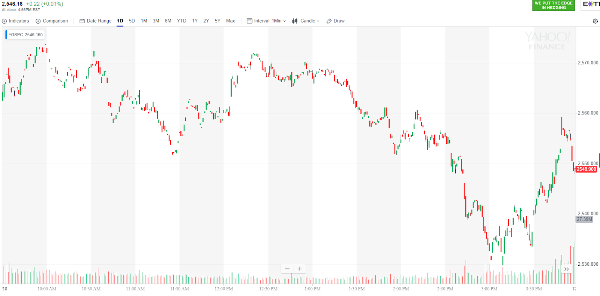
图示：11:00反弹的时候，没有越过2565.说明这个是关键点。然而12：10反弹的时候，越过了这个点。
似乎处于升势。但是它越过的方式是快速上涨，另外越过后，一直没有新高。而是冲高一下后，走低，走平很久。这样就不是升势。
还有就是它本身反弹没有根基。这个反弹不是一个底部反弹。
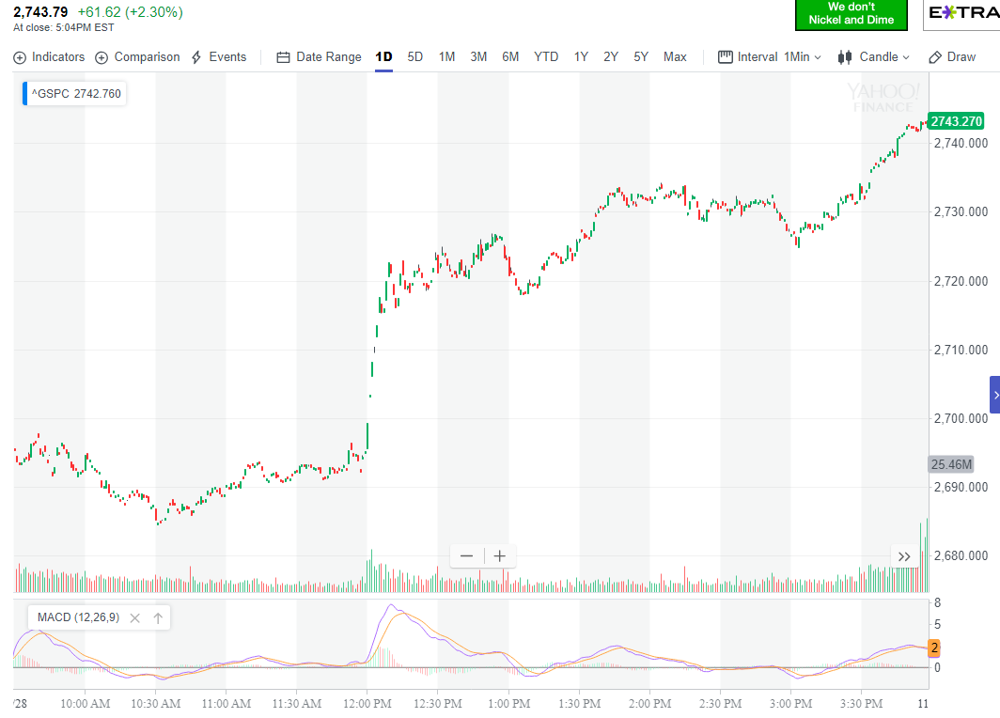
图示：2692是关键点。它下跌的时候，一下越过这个点大跌。大跌后，大盘开始反弹。反弹很慢。
但是越过了2692到了2694.然后下来。短时间内来回穿越这个点。即使如此。升势保持不变。仍然在升势。应该逢低做多。
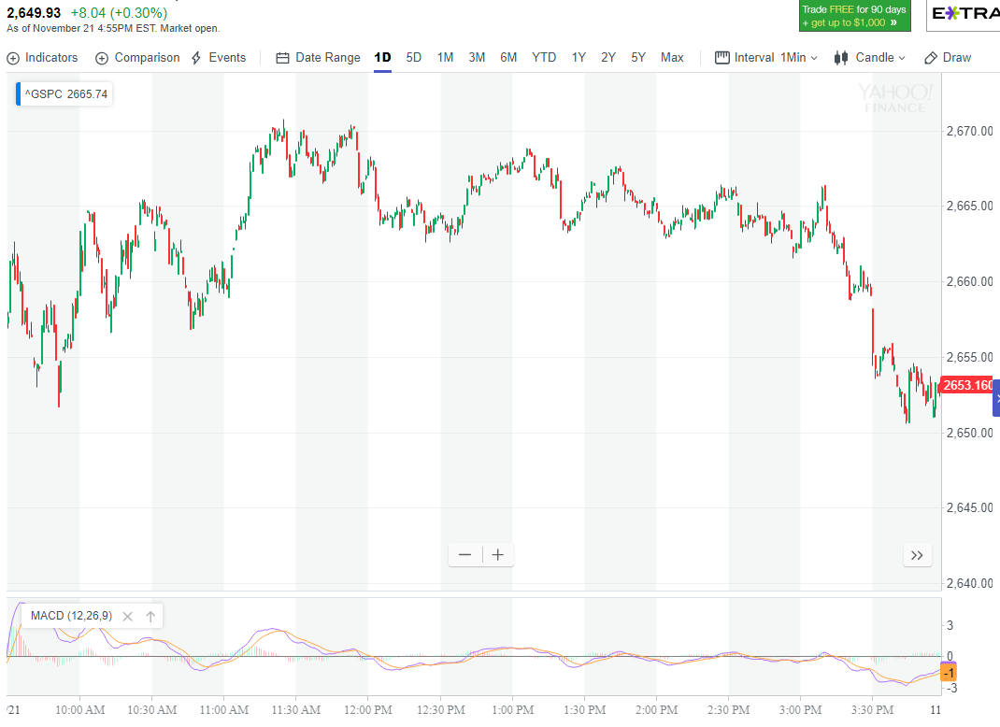
图示：开盘后下跌，9：45反弹到了2658. 走平几分钟。再次下跌。这个2658附近就是一个阻力点。
真正的下跌是不能超过这个点的。然而它反弹的时候，很快越过这个点。说明反转了。应该做多。

图示:10：28出现双底后，大幅反弹，反弹到了接近前面的下跌开始的地方，这个说明要继续跌。
而且要创新低。2796是个关键点。11：00反弹突破后，后面再次下来。在11；50和12：10测试这个点。反弹后大涨。
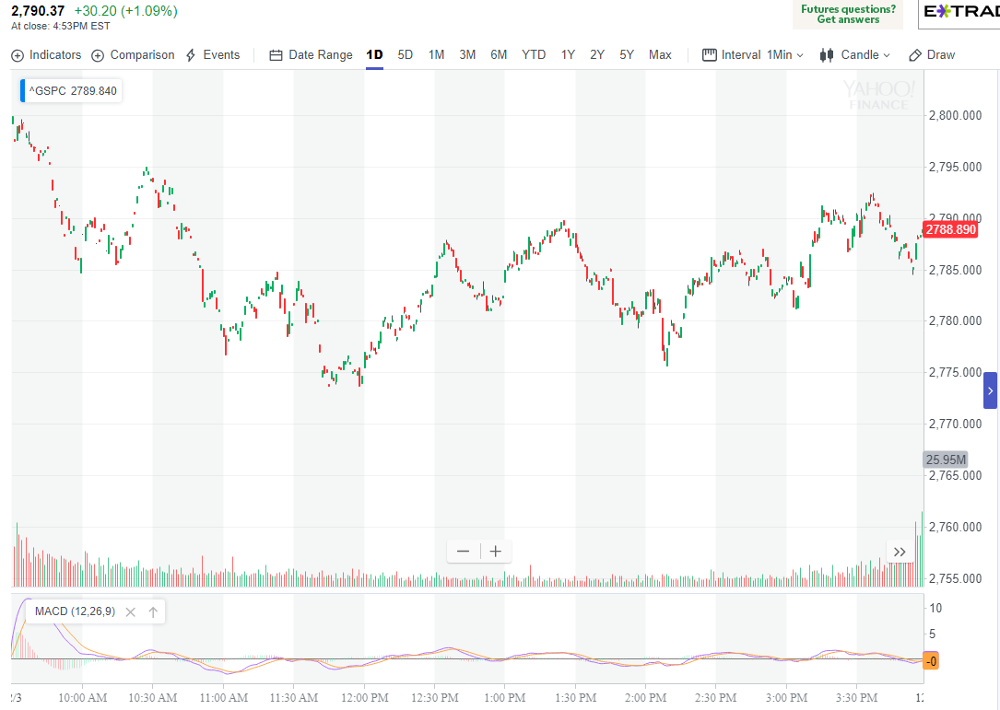
图示： 10：50破位下跌，11：20反弹测试2785这个点。不能超过，仍然下跌。
但是在12：30的反弹中，这个点被突破。说明跌势变成升势。但是不是立刻就涨。但是应该逢低做多。
用很长时间穿过跨越点后，稍微回调，短时间内再次穿过跨越点，会反转:
0. 这个走势在升势和跌势都会发生，是对称的。这个只有在一个走势的末尾才发生，如果刚刚开始，那么不是这个走势。
只有跌了一段时间，或者涨了一段时间，发生这样的情况，就是这个走势了。
1. 它从一个点迅速反弹，没有突破上面的关键点，然后缓慢下跌，时间很久。再次下来后。一下突破前面的低点，然后走平或者不走平。
立刻反弹，短时间内再次下跌，再次突破前面的低点，形成另外一个跨越走势。但是时间很短。这样就形成了加速走势。从而反弹。
2. 要想到很多人在前面的一个点等着买入。结果被一举突破后，市场不会那么好心让这些人舒服。所以再来一次冲高下跌更深的
走势，让这些人感到绝望后，大涨。
3. 但是也要仔细分析。这个是反转走势，所以很危险。一定是不断下跌后，出现这个走势。这样才又加速的样子。如果一直在一个位置徘徊很久。
超过2个小时。再下跌，而下跌时候，幅度不大，那么就不是加速，而是未来要暴跌的前奏。

图示：11：20出现两次跨越走势，似乎是一个全天大跌走势。结果它确实下跌，然后就大幅反弹了。说明在全体升势的情况下
也不一定就一定会大幅反转。要看情况分析。
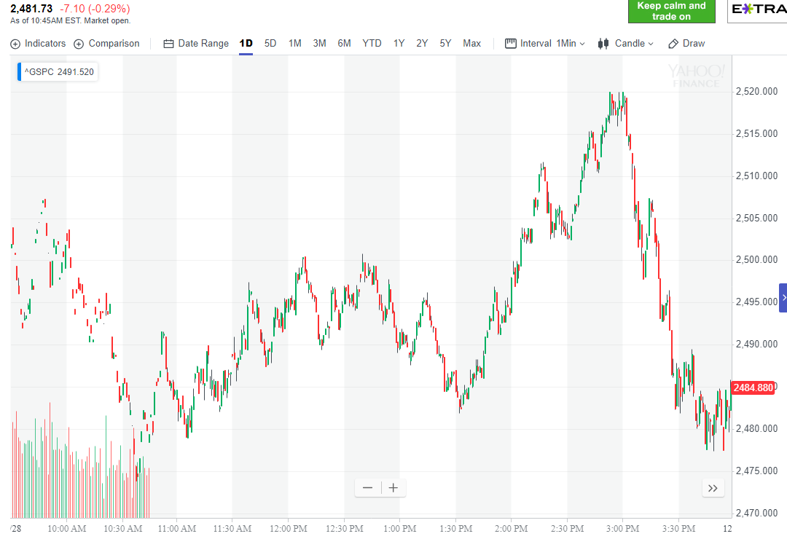
图示：1：30开始大涨，也出现了冲高后立刻走低的走势。这个不是到顶的标志，因为刚刚开始。
在2：40经过长时间的走平后，再次跨越前面高点。然后再次下来，短时间再次跨越。这样就是顶部了。可以看到它似乎加速就做空。
它不一定就会在顶部走平。至少这里离顶部很近了。
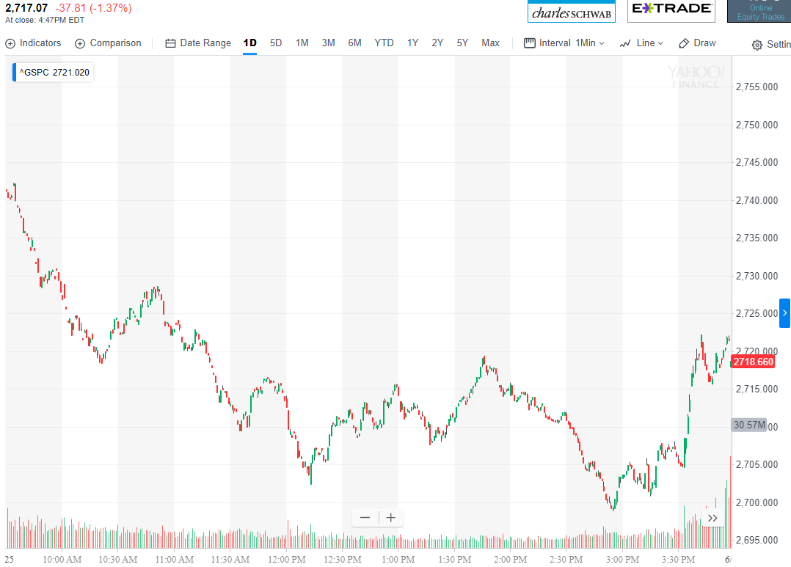
图示:11：20用了一个小时跌破前面的低点，12：05用了20分钟再次跌破。这样形成了加速走势，
而大反弹。
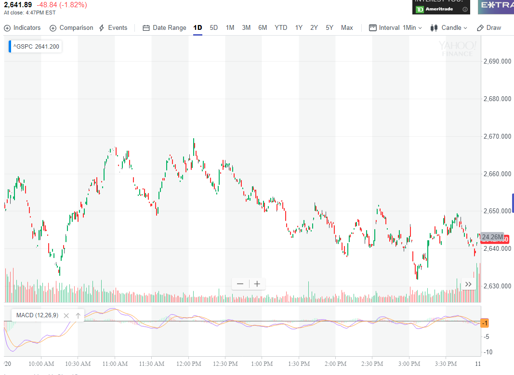
图示：大幅低开接近40点。它缓慢上涨，然后开始下跌。可以认为它用了很长时间来跨越一个点。
这个点在开盘前就存在了。2650.跨越后，它反弹。接近2650后，再次下跌。这次跨越间隔时间很短。上一个跨越用了20分钟。
这个用了10分钟。
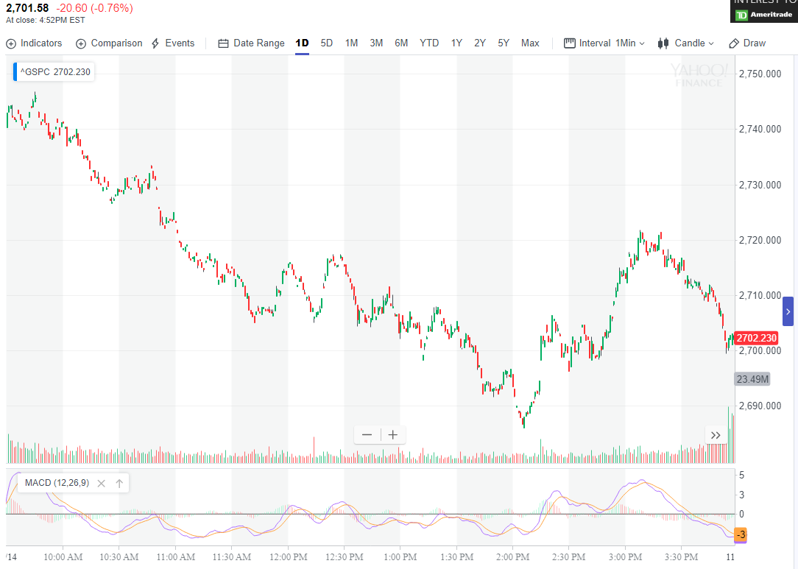
图示：1：10开始反弹。大约用了40分钟才回到这个点，一举跨越低点后大跌。它下跌后，走平
几分钟，反弹，再次下跌跨越。这次跨越用了15分钟。是个加速走势。这样，它就会反弹。一旦停止就下跌，就可以做空。
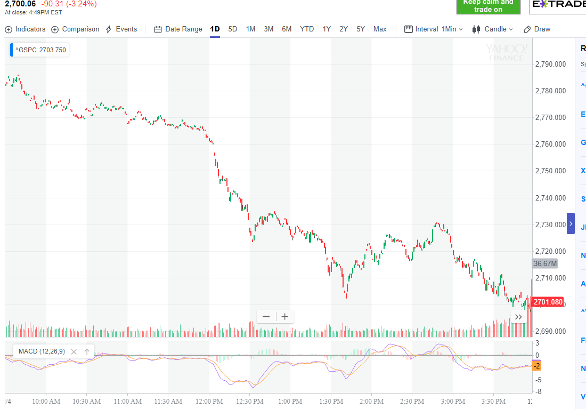
图示：12：30开始反弹。它用了接近40分钟才再次下来突破低点。然后立刻反弹，再次下跌
突破前面的低点。这次只用了10分钟。这样就成了加速走势。会反弹。
横向5浪走势
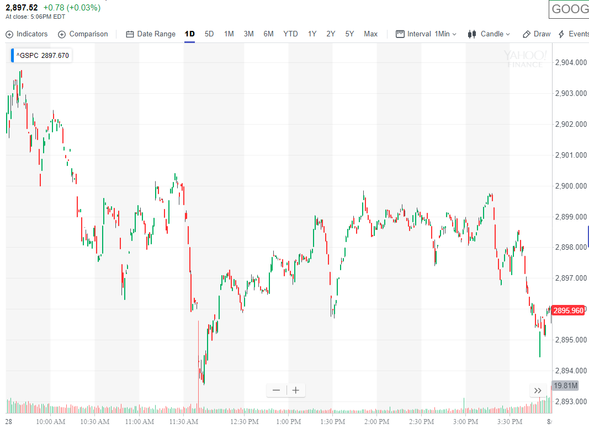
图示：10:40出现了横向5浪走势后大跌。
市场制造的直觉陷阱
TOP
1. 由于我倾向于做空，我常常会被空头陷阱所欺骗。直觉陷阱分为几种。
大盘下跌的时候，速度很快。让我眼馋。然后它再次上来的时候，我想在同样的位置
继续做空，结果它这次反而大涨。从而让我损失很大。这种情况可以发生在几分钟到几十分钟的级别的样子。
实际上，大盘下跌速度很快，意味着主要走势是升势，下跌后，升势会很猛烈。
大盘在盘中震荡的时候，如果走势不清晰，大盘会制造一个顶部，然后再次确认一次。
好像这个顶部很可靠一样。但是它走低的时候速度很快，说明了大盘其实是升势。它会大幅快速拉回后，大涨。
突破这个点。
图示：10：20，大盘飞快的大跌。让我印象深刻。所以它上来后，我不断做空。希望可以
重复这个样子。结果大盘反而处于升势，最后大涨。在12：10和12：40，大盘制造了一个顶部阻力点，在2500.这样显得很强大。
结果它快速下跌后，积攒力量，一举突破2500后大涨。1：30开始大涨的时候，在1：50快速回调5个点。显得很弱。
让我直觉想重复这个行为。就在下跌的地方做空。结果它一举突破这里后大涨。同时也突破阻力点。
大盘上涨的时候，速度很快，而下跌的时候则，出现一个底部支撑，每次都反弹起来，
结果开始冲高后，大跌，一举跌破这个地方后大跌。
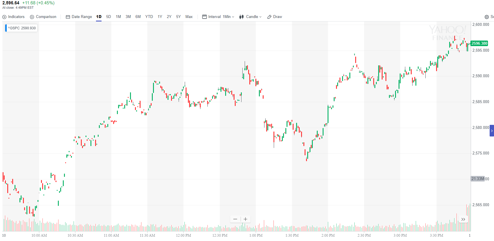
图示：从11：40到12：40，市场制作了一个底部在2585。而市场在上涨中出现了巨大的
空挡需要填补。它一定会冲高大跌的。后来果然它冲高大跌，然后快速冲破这个底部后大跌。
一个很小的走势，就引发大涨，速度很快幅度很大。好像很强。其实全天反而是跌势。
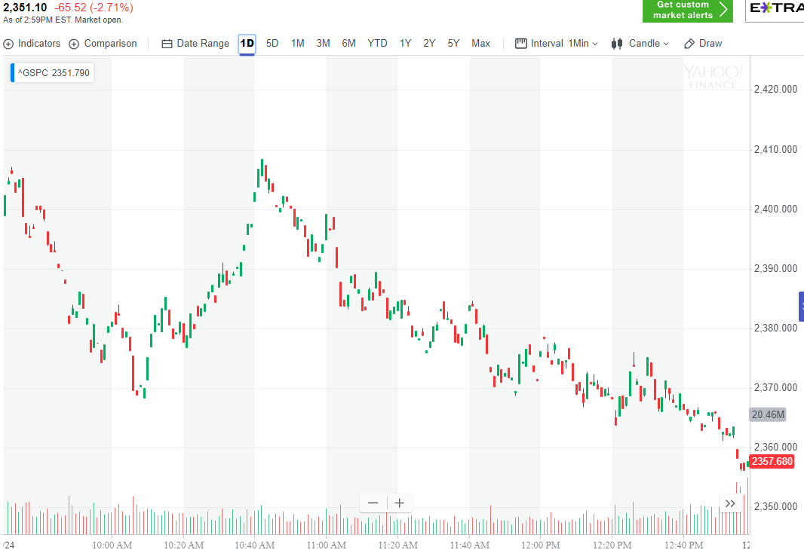
图示：10:10开始，快速上涨，幅度很大，时间很短。现跌很强，其实反而全天
跌势才是主力。
从低处逐渐增强的上涨
0. 这个走势升势和跌势都会出现。这个走势的规模可以很大。也可以很小。是个非常常见的大涨走势。
1. 关键是第一浪上涨。它幅度不大。但是回调很快。也很大。然后第二浪立刻冲过第一浪高点，但是幅度也不大。如果和第一浪的高点比，没有涨很多。
而且回调到了第一浪的附近。这样就会持续大涨。
2. 从另外一个角度看，它回调后，再次上涨，会跨越前面的高点，创造更高点。这样和跌势是对称的。
会继续涨。
3. 这个走势关键在于，它的高点要越来越高，而不是更低或者一样，如果一样，就反而是跌势了。
4. 它开始的幅度要比较小，然后慢慢的加大。如果开始就很大，那么就不对，不是这个走势。要考虑别的情况。
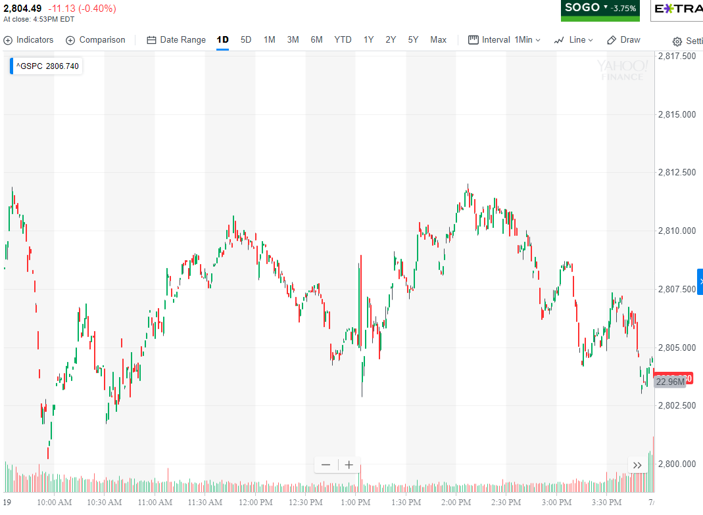
图示：10:30出现第二个底，但是比前面的高。属于逐渐增强的走势。
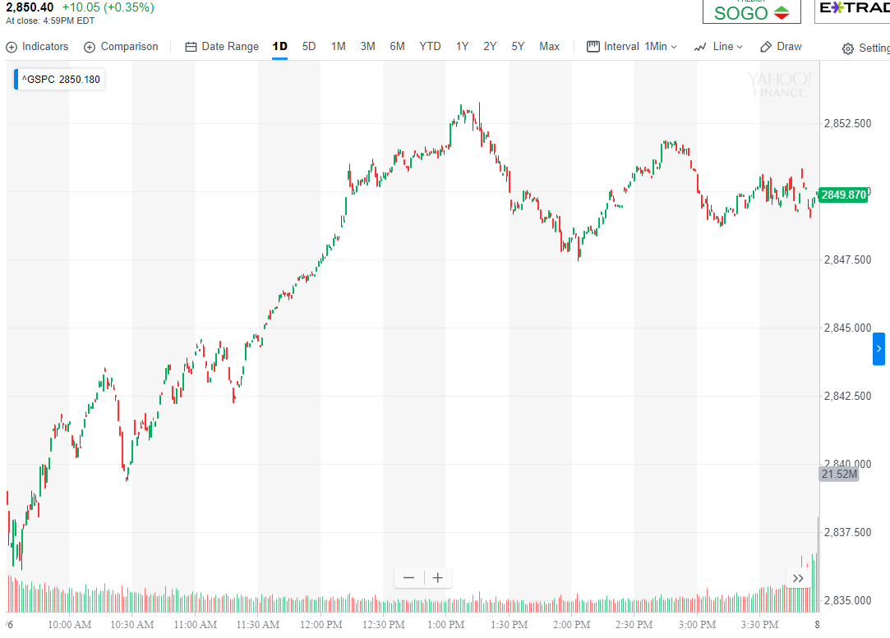
图示：这个也算是一种逐步增强。关键在于它的高点更高。但是低点不一定更高。
不要看到它的低点低了。就害怕。另外它的低点更低的时候，跌的速度很快。也预示着下跌很快结束了。
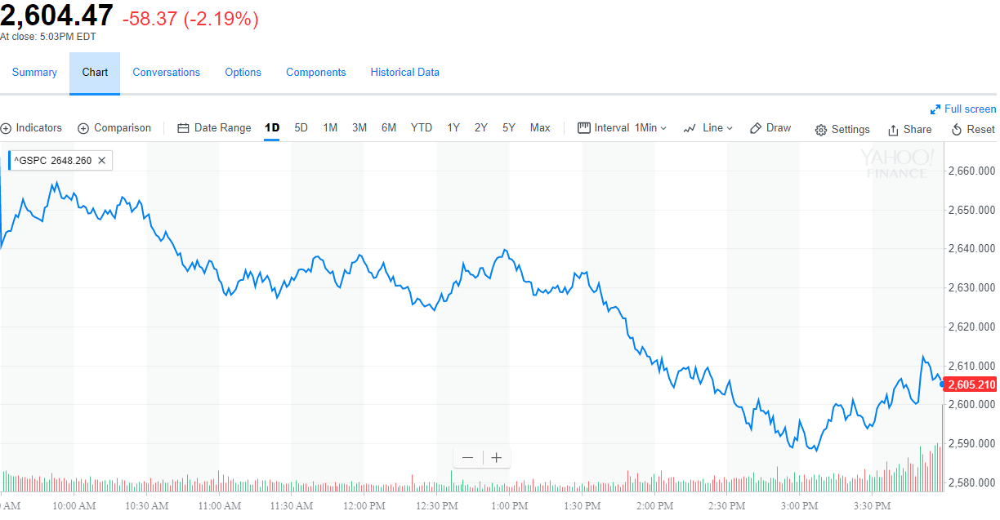
图示：这个是疑似增强，然而不是，几个区别。一开盘涨幅很大。
一下涨了10个点。然后回调后，再次冲高。然后下来很小。走平几分钟，再次下来走平很久。
这个反而是要大跌的走势。
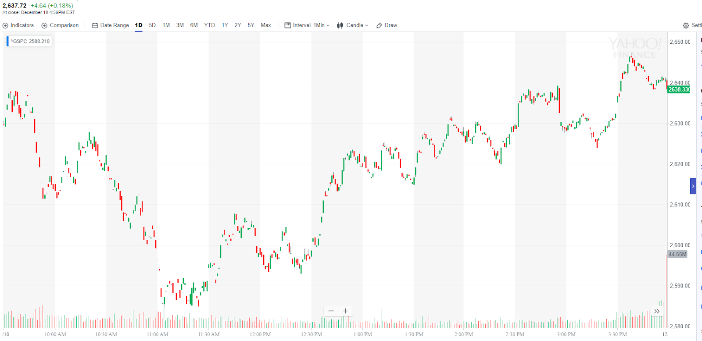
图示：开盘后，走平几分钟后，快速下跌。这个本来应该是大涨的走势，
然而，它开始反弹的时候，出现了逐步增强的走势。最后它大涨的时候，先是出现了加速上涨，然后过了几分钟，
再次上涨。这个整体就是一个加速方式。就是在逐步增强的时候，加速涨，然后走平。再次冲高。可以看到。
它居然还没有超过震荡的低点。说明市场看重这个点。而且它恰好在这个点之下。说明它的计划就是要跌了。
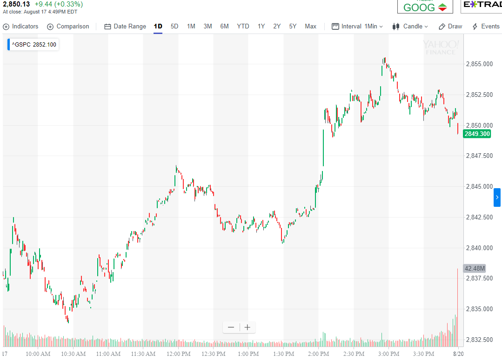
图示：10：25开始上涨。10：40回调很大。回调了60%.再次上涨，
再次回调，回调幅度不大。只有30%。这时可以做多。它会开始大涨。
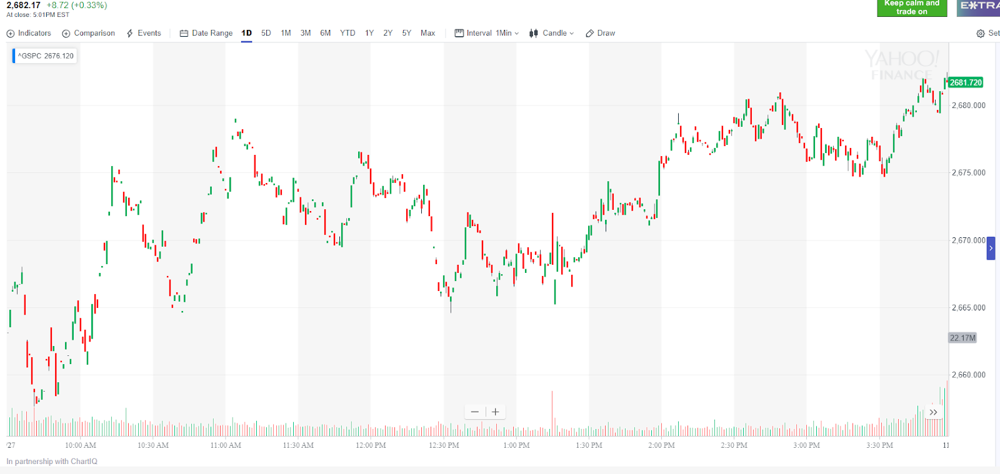
图示：开盘后冲高，然后快速下跌。这个本身已经有所预示。
但是不能作为真的指标。从底部开始反弹后，它反弹一些，大幅回调。再次反弹，比前面的高点高，回调后
比前面的低点高。然后大涨。
下跌的开始，冲高后，下跌时候，直接越过前面的冲高点
-1. 这个走势如果下跌的时候走平，然后再跌。却决于下跌的情况。如果幅度比较大，那么就是底部了。应该先平掉空仓，
然后开始反弹后，反向做多。
0.这个走势不是一个独立走势，它一定要么在跌势，要么处于升势中的小跌势。
1. 它的前面一定要有一个底的样子，比如说，走平的样子，然后冲高后，越过这个走平点。
2. 它越过低点后，一般会在刚刚低于低点的地方走平几分钟。不一定反弹，就是走平，也可能稍微反弹一些。这样让做空的人感到疑惑，
因为才跌了一点点。
3. 它也有可能越过低点后不断下跌，一旦越过低点就是大跌的情况。
4. 从我的直觉操作上，它的底部不断反弹后，下来。我会不断买入卖出做多。结果最后一次买入后，它冲高后，我卖出。
然后在原位放个单子等着。它却直接越过这个地方而大跌。
开盘出现的情况
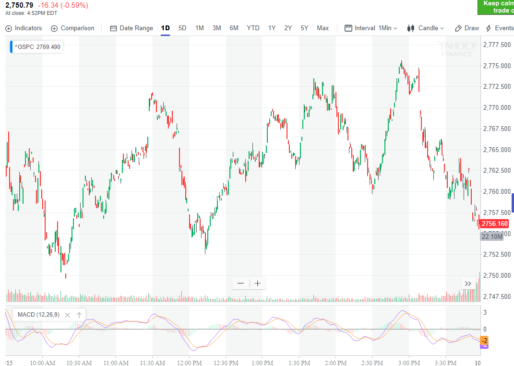
图示：这个和前面的例子相反。下跌的速度很快。上涨很慢。说明上涨是主要力量。
在高点的时候，它冲高，回落，走平。说明要继续大涨。
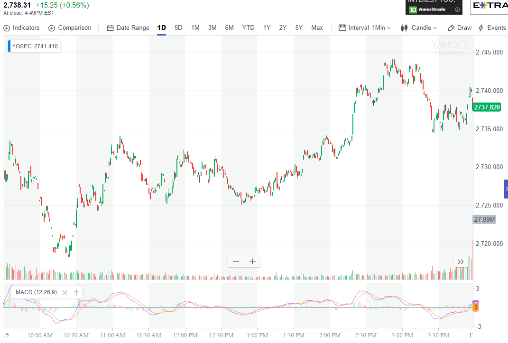
图示：这个可以用右侧分析来分析，但是也可以用冲高大跌来分析。9：50的时候，
它从2728冲高到2730.然后下跌时候，直接越过2728大跌。可以在它低于2728的时候做空。或者如果已经做空。这个是确认。
盘中出现的情况
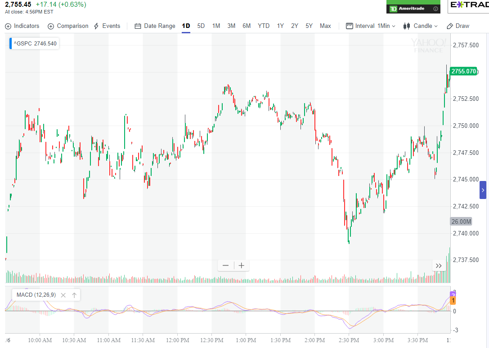
图示：1：50分钟，它冲高后，下跌。冲高的启动点是2750.而下跌的时候，则
直接穿过2750，很快走到2747.然后反弹几分钟。继续大跌。这个穿越，就是下跌的开始。
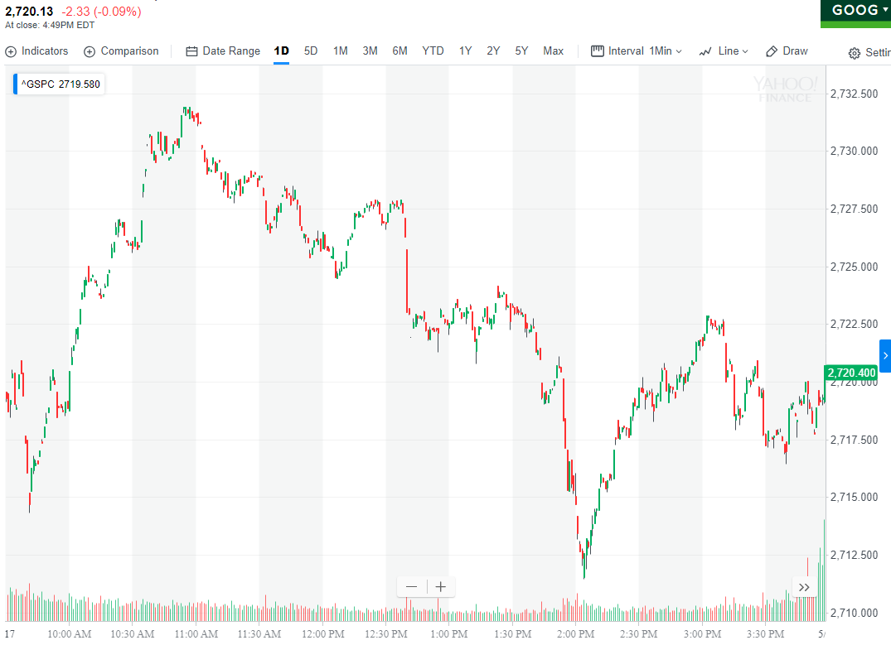
图示：12：10反弹从2725 到2727.走平。12：40的时候下跌，直接越过2725大跌。这个才是第一次下跌。
后面再跌就表示第二浪下跌。这样到达底部。要看到1；40下跌后，立刻反弹反弹高点接近前面低点。那么这个不是一个底部。
直到2：00才是大跌。
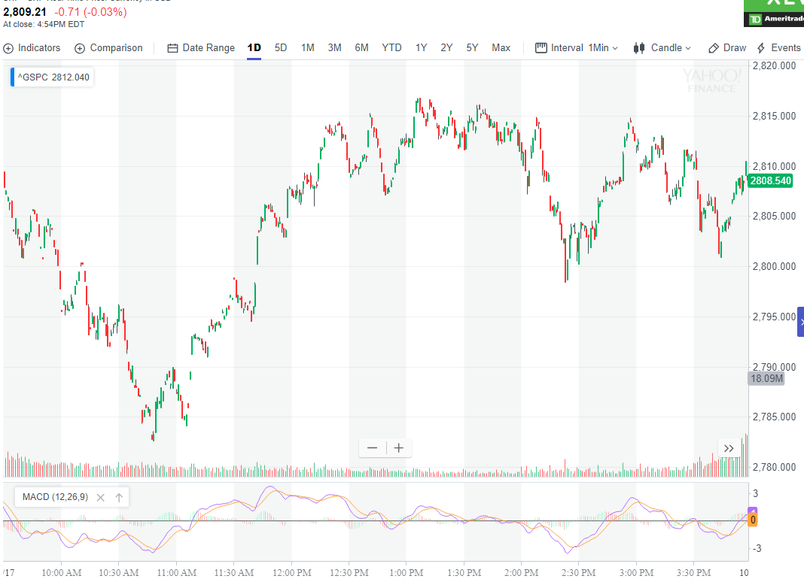
图示：开盘后，10：00反弹。反弹点接近前面的低点。停下来后下跌。下跌的时候直接越过反弹点。
开始长时间走平。再次下跌后，就到了底部。这个就是两段走势。
市场在一天内常常遵守一样的类型
0. 比如它的底部，如果前面的底部是用缓慢走平来实现的，那么后面的底部也是如此。不会一个是缓慢走平，一个是快速下跌。
这个观察有待证实，不过可能是个大概率事件。
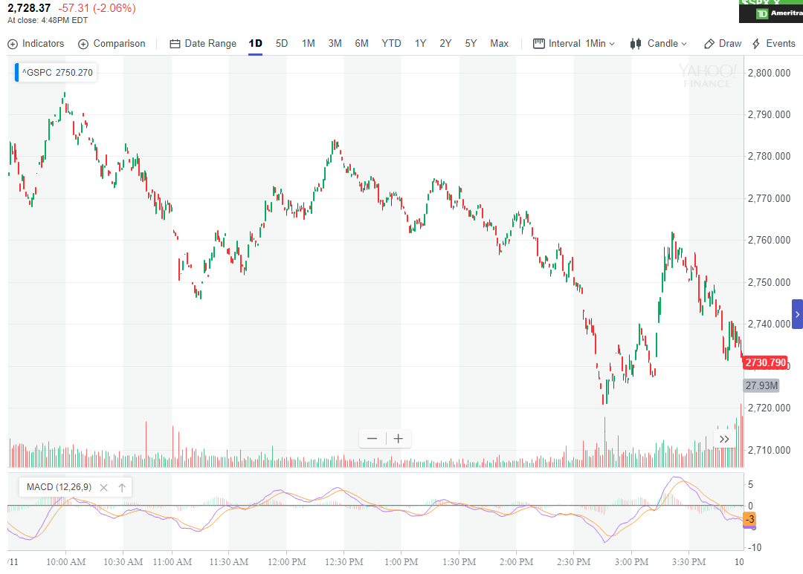
图示：11:20分，2：40分钟，这两个底部都是通过最后一分钟大幅下跌实现的。
弱第一浪走势
0. 上涨幅度不大，回调几乎所有涨幅。
1. 上涨幅度比较大，回调所有涨幅
2. 上浮幅度不大，走平比较长的时间，再次上涨前，向下倾斜
3. 上涨时候，每一浪的形状很重要。它应该很快就大幅上涨，然后出现90度的或者小于90度的转折，转折后，连续下跌几分钟，
让人觉得要跌回去了。然后拉起来。这样就没有加速上涨的样子。这样会继续上涨。
4. 如果上涨后，出现大于90度的样子，然后在高位徘徊超过4分钟，出现一个弧形，那么这个可能要跌，
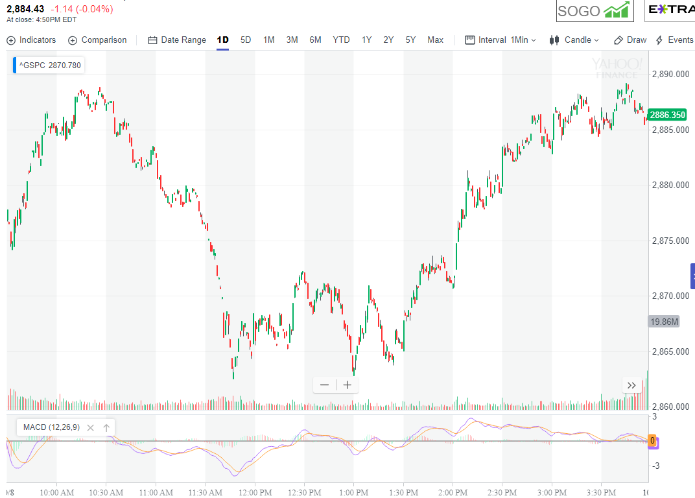
图示：1:00出现双底反弹，而前面跌幅很大，说明这个是底部了，可以做多了。
它从双底反弹后，上涨，然后大幅回调，1：20分附近，回调所有涨幅。这时可以做多。会大涨。
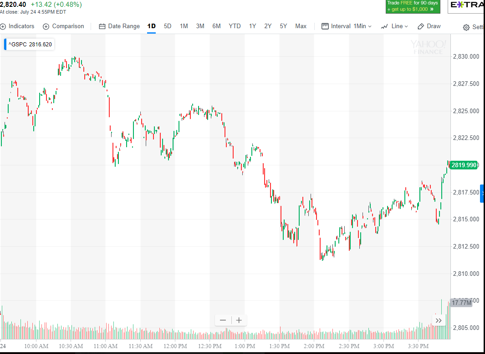
图示：这个的第一浪也不大，而回调很大，但是这个是真的5浪。区别目前分析如下。
1. 它开盘没有走平，直接冲高。它在第5浪停下来，然后在高位停留了好几分钟。这样一般见顶的样子。后面更是下跌出现新低。
说明不是大涨走势。另外它的开盘是较大幅度高开。所以向上运动的力量也不大。
图示：10:30开始反弹，然后大幅回调，几乎回调所有涨幅，再次上涨，新高，这次回调比上次小。
说明是个逐渐加速上涨的过程。果然后面大涨了。
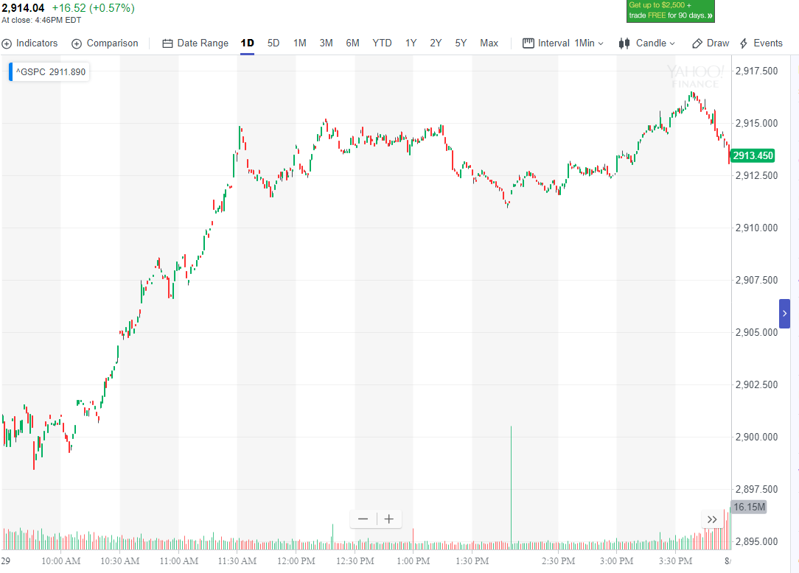
图示：10:10出现第一浪，涨幅只有2个点。而它前面已经出现双底，所以暂时不会再大跌了。
然后它基本走平，然后大幅上涨
市场引诱做多走势
1. 市场长时间爬升，显得很强，让人觉得应该做多。然后在高位下跌一些后，快速反弹，其实就是陷阱上涨，
然后再次下来，这样如果想捞一把，即使认为市场要跌，也想做多快速捞一把。因为前面的印象就是要快速上涨。
结果市场不再反弹，而是直线下降。
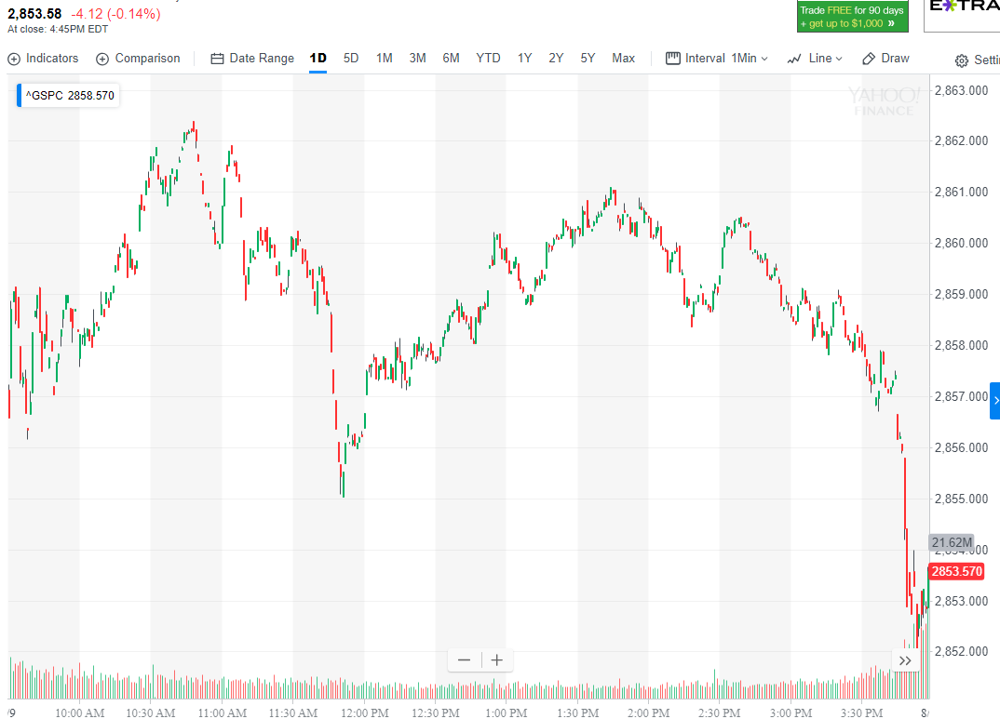
图示：2：50市场从高位下跌一些，因为前面的图形，让我认为市场会反弹一下
这样即使我想做空，也想捞一把做多。结果市场没有给这个机会。
从最高点，非常小的幅度的连续下跌，启动了跌势
从最高点，非常小的幅度的连续下跌。或者较大幅度下跌后，反弹，然后出现非常小幅的下跌。那么这个应该紧紧拿住。
或者一旦看到它下跌幅度很小，而且连续超过5分钟，可以加仓买put。这个会变得跌的非常厉害。应该紧紧拿住。